，终点地图为
，终点地图为  ，未知格记为
，未知格记为  ，覆盖率定义为
，覆盖率定义为面向未知大场景，移动机器人需要在地图不完整和运动预算有限的条件下持续探索，同时兼顾已经测得的设施表面。本文研究未知区域覆盖与实测表面观察的联合决策，并通过独立的受控设施建档研究分析类别先验与几何反馈对观察选择的条件作用。
未知探索部分从激光、RGB-D和位姿更新在线地图，在当前已知可行区域生成候选，并结合覆盖、表面质量与结构对象代理选择动作。基于原v10.3.1的部署变体改变了相机增益、候选组织与失效重规划，并适配传感范围。一个Q0受控场景的两种相关互换布局中，原版和部署策略各完成八条轨迹，另有四条同候选覆盖评分消融和四条frontier对照；24条均返航，但不构成24个独立场景。frontier在95%覆盖阈值更早，联合策略在96步预算下更早达到99%，两者结果混合；语义效应不能解释为未知覆盖效率提升。不同版本在west、96步条件的S/G差异方向相反，其他配对持平。实车记录包含不同执行配置的两次40动作返航及一次7动作后中止的历史依赖续行。最新一次CAN里程7.394 m、耗时542.444 s，内部面积代理从72.08增至128.28 m²，但固定旧表面质量代理从0.213760降至0.199107。此前完整轮次的12次规划与最新轮次的12次规划（仅前2次有多个候选）各自均为S/G同分。随后同场景新地图C→S试验中，覆盖C完成40动作返航，联合S在32动作后因原圆形轮廓检查失败而未返航；两次初始信息不同，不能据覆盖终值作效率排名或归因评分收益。面积与质量均非独立真值，尚未验证实车相对效率、语义收益或重建精度。
独立的V35受控机制研究采用公开姿态图、模板和准确模拟位姿。局部配对在两个已见父布局及两种构型中得到两胜两平，平均覆盖与表面F1乘积提高6.16%；新增背景布局四组为一胜三平，平均提高2.98%。预算扩展保留32次规划失败及54步条件下−0.70%的差异；多实例场景级九组S/B比较均无动作或质量差异。这些结果限定于受控设施任务，不能作为未知探索优势的证据。
关键词：未知环境探索；主动覆盖；结构感知；语义先验；实测表面
Mobile robots exploring large unknown environments must select observations with incomplete maps and limited motion budgets while also observing measured surfaces. This thesis studies joint unknown-space coverage and measured-surface observation, alongside a separate controlled facility study of the conditional effects of category priors and geometric feedback.
The exploration pipeline updates an online map using laser, RGB-D and pose inputs, generates candidates in currently known feasible space, and scores coverage, surface-quality and structural-object proxies. A deployment variant of v10.3.1 changes camera gain, candidate organization and replanning after invalidation, and adapts sensor ranges. In one controlled Q0 scene with two related swapped layouts, the original and deployment policies each produced eight trajectories, plus four same-candidate coverage-scoring ablations and four frontier comparisons. All 24 returned, but they are not 24 independent scenes. Frontier reached 95% coverage earlier, while the joint policy reached 99% earlier under the 96-action budget. These mixed outcomes do not establish a semantic improvement in unknown-coverage efficiency. The S/G difference at west with a 96-action budget reversed between versions; other pairs tied. Physical records include two 40-action returns under different execution configurations and a dependent continuation stopped after seven actions. The latest episode covered 7.394 m by CAN feedback in 542.444 s: its internal area proxy increased from 72.08 to 128.28 m², while fixed-old-surface quality decreased from 0.213760 to 0.199107. S/G tied at the earlier completed episode’s 12 planning states and the latest episode’s 12 states (only two with multiple candidates). Neither proxy is independent ground truth. Relative real-world efficiency, semantic benefit and reconstruction accuracy remain unvalidated.
The separate V35 controlled mechanism uses a public pose graph and templates with exact simulated poses. Local paired tests on two previously seen parent layouts and two configurations yielded two wins and two ties, with a 6.16% mean increase in the coverage–surface-F1 product; four pairs on new backgrounds yielded one win and three ties, with a 2.98% mean increase. The budget extension retains 32 planning failures and a −0.70% difference at 54 steps. Nine scene-level S/B comparisons showed no action or quality difference. These results are confined to the controlled facility task and do not establish an unknown-exploration advantage.
Keywords: unknown-environment exploration; active coverage; structure awareness; semantic prior; measured surfaces
随着感知、决策与运动执行能力的结合，具身机器人在工业生产中的应用持续拓展。世界经济论坛关于Physical AI的报告将环境感知、自主决策与行动能力视为工业机器人发展的重要方向[9]。面向车间巡检、物料搬运和设施管理等任务，机器人需要获得与当前工作环境相符的空间信息，才能组织后续运动与观察。环境地图因此既是导航的依据，也是记录设备布局、检查设施表面和支持生产空间管理的基础。
工业生产空间具有相对稳定的建筑结构，也可能随工艺切换、设备维护和物料组织发生局部变化。例如，工位调整、设备重新布置或物料暂存位置改变，可能使既有地图中的局部布局和可见表面不再对应当前配置。围绕这类需求，本文关注布局调整完成后的再次建图：在一次任务期间将环境视为静态，由机器人主动选择观察位置与朝向，获取当前区域和设施的几何信息。这里的环境变化发生在任务之间，运行中的行人或车辆运动预测及动态避障不属于本文研究范围。
主动同时定位与建图（active SLAM）研究通过运动选择改善对环境及自身状态的估计，主动空间感知则进一步关注行动如何影响可获得的信息[10]。本文聚焦其中的主动建图与观察规划问题：在统一的位姿输入和重建后端下，研究机器人应优先前往哪里、朝向哪里，以及何时用新几何证据修正原有判断。实验采用准确模拟位姿，以隔离观察策略对结果的影响，评价区域覆盖和实际表面重建质量。
工业设施的建图需求同时涉及通行区域和设备本体。移动机器人沿通道采集信息后，二维地图可能已经较为完整，设备背面、开口和凹入结构却仍受遮挡。对于布局调整后的建档任务，仅沿用固定巡检路线可能遗漏新的遮挡面；全面重复扫描又会占用运行时间和运动预算。因此，需要根据当前可用信息分配观察机会，使区域覆盖和设施表面质量在同一任务中得到协调。
主动观测通过选择后续位置与朝向，影响机器人将获得的信息。在有限运动预算下，继续向未知区域移动、靠近已有设施、转向另一观察侧以及返回起点，需要在同一资源约束下协调。如果只追求已知栅格数量，规划器可能忽视已经进入地图但尚未充分建档的设施；如果只反复观察局部目标，又可能损失区域覆盖。因此，设施建档需要同时考虑区域覆盖和表面质量，并使观察收益能够与实际运动成本相联系。
工业设施的类别与结构知识为这种决策提供了补充信息。设备目录、结构模板或维护知识可能提示开口、服务侧和主要结构方向；语义预测巡检已有利用工业结构规律组织观察的研究[7]。当当前几何仍不能明确区分构型时，这些线索可能帮助机器人优先访问较有价值的一侧，减少先探查再改向的开销。同时，类别判断与结构关联都可能出现错误，规划器需要依据后续几何观测调整判断。类别信息的价值由此落实为观察动作及实际重建结果的变化。
本文以工业生产布局调整所带来的建图需求为应用背景，研究预算受限设施建档中的类别先验、几何反馈与观察规划。受控CPU实验抽取设施遮挡和观察方向歧义，在每个静态配置中执行独立建图，追踪信息、行动与终点质量的联系。当前验证覆盖这一主动观测环节；跨任务的变化检测、旧地图融合和长期地图维护留待后续扩展。该研究为工业机器人在当前配置下主动获取环境几何提供可执行的策略基础。
自主探索需要在环境表示、长程路径和局部执行之间进行协调。主动SLAM研究形成了候选动作生成、信息价值评价和执行更新等组织方式，也包括信念空间规划与学习式策略等求解路线[10]。TARE使用局部精细表示与全局稀疏表示协调探索路径，面向复杂三维环境提高探索效率[5]。较早的Active Neural SLAM（ANS）是学习式地图、全局与局部策略相结合的代表工作[1]。本文采用决策与执行分工，将研究重点放在工业设施的类别结构线索、实测反馈和有限预算观察分配上。
几何探索本身具有主动选择观察位置的能力。机器人可以为消除几何歧义而前往诊断位置，也可以在获得新数据后改变路线。因此，研究语义作用时，需要保留几何对照的主动观察和重新规划能力。本文沿用模块化设计，在共同安全图和行动预算下比较有无类别信息的决策，关注类别在线索尚不充分时带来的附加作用。
主动重建把观察位置选择与模型质量联系起来，通常需要考虑可见表面、遮挡、传感方向和后续运动代价。GenNBV结合几何、语义和动作表示，通过强化学习在五维自由空间选择下一最佳视点，研究跨场景主动重建策略[6]。设施建档同样需要克服自遮挡和视向不足，但地面机器人受到可通行位置及转向动作的限制，获得一组有价值的观察往往还需要满足区域覆盖和返航要求。
重建后端会影响最终模型，观察策略的比较应尽量使用一致的数据融合方法。Open3D提供通用三维数据处理能力[4]，本文使用其CPU深度融合流程作为各组共同后端。公开模板用于预测候选观察的潜力，三维模型由实际取得的深度构建。将预测与实测融合分开，可以避免把先验模型的完整性误当作机器人已经完成的建档质量。
语义巡检将目标类别、观察需求和路径选择联系起来。SWAP结合体积探索、语义目标补洞及具有分辨率和入射角要求的表面巡检，体现了语义目标与观察质量的联合考虑[2]。SPP利用语义场景图中的重复结构预测尚未观察的目标，并据此组织工业巡检路径[7]。这些研究说明，语义既可以表达任务对象，也可以为未见结构及后续观察提供先验。
VISTA使用在线语义高斯地图支持开放词汇任务，并结合语义相关性与视向覆盖评价滚动轨迹[3]。ActiveSGM联合语义和几何不确定性，预测候选观察的信息性[8]。相关研究从任务相关性、结构预测和不确定性等方面扩展了观察价值的表达。本文在这一研究背景下，聚焦类别与有限设施构型之间的关系，使用显式构型权重和实测残差连接类别输入与后续行动。
表1 相关研究与本文任务的对应关系。
| 研究方向及代表方法 | 主要关注内容 | 对本文的启示与定位 |
|---|---|---|
| 主动探索与规划：[10]、TARE[5] | 环境表示、信息价值与多尺度路径 | 组织观察决策与执行检查，统一观察和返航约束 |
| 主动重建：GenNBV[6] | 下一视点选择与重建质量 | 评价实际表面结果，并考虑地面动作限制 |
| 语义巡检：SWAP[2]、SPP[7] | 目标观察需求与结构先验 | 将类别线索落实为可执行的观察选择 |
| 语义主动建图：VISTA[3]、ActiveSGM[8] | 任务相关性、视向与信息价值 | 区分类别先验、实测证据及预测观察收益 |
| 本文受控设施建档 | 类别选向、几何纠错与预算规划 | 用共同主动几何基准检验类别的条件增量 |
本文的研究定位是任务条件下的方法集成与机制验证。贝叶斯换权、语义补看和信息价值已有相应研究基础；本研究进一步建立类别输入、实际动作与设施重建之间的可检查联系。实验中的SWAP-I和VISTA-I用于共同CPU条件下的观察机制比较，其作用范围与原作者完整系统不同。
本文考虑机器人具有设施目录、候选构型模板及安全姿态图的任务。机器人知道可能的结构，但不知道当前设施的真实构型；只能根据已经执行动作取得的RGB-D、扫描和位姿更新判断。局部实验研究类别信息能否帮助提前选择有效观察方向，以及错误先验能否通过后续实测得到修正；多实例扩展进一步研究同类设施之间的证据共享是否在固定类别先验之外改变可执行决策。两个问题分别检验，不能以局部类别收益代替跨实例共享验证。
第一个难点是区分覆盖与有效观察。相邻地面已被记录时，设施表面仍可能不完整；重复观看也可能因为角度相似而无法新增有效信息。方法需要在规划中估计不同方向的潜在收益，并在评价时分别检查二维覆盖和三维表面质量。本文采用覆盖率与表面F1的联合指标，同时保留两个分量及任务资格，避免只用单一总分掩盖变化来源。
第二个难点是协调先验与实际证据。类别能够在几何不明确时提前影响选择，也可能把机器人引向错误一侧。若重复帧不断增强同一先验，或把预测结果直接写入实际信念，错误可能被放大。本文对类别支持进行有限登记，对新姿态的实际几何残差进行更新，并在获得新观测后重新规划，使先验可以被实测修正。
第三个难点是信息获取需要消耗资源。探查本身可能帮助辨认构型，但也占用后续重建和返航预算。规划器需要在当前观察收益与未来判断改善之间作出权衡。与此同时，实验需要把类别信息、反馈机制及规划目标的差异分开，才能说明收益来自何处。共同规划器下的类别开关、错误类别对照和其他机制比较分别服务于这些问题。
多实例任务还要求信息在可用预算内到达正确对象。地面连通可能使设施关联出现歧义，名义模板与实际表面错位又可能造成重复观察仍被计为新增面积。即使后验已经变化，变化幅度也可能不足以改变候选排序。因此，研究需要分别检查关联资格、信念变化、可执行选择和实测质量，而不能把任一中间环节改善等同于完整方案的性能提升。
本文以未知区域主动覆盖为主目标，兼顾已测表面的观察。首先追溯v10.3.1的在线地图、候选和覆盖—表面联合评分，并区分原版与部署变体；基于虚拟传感的固定矩阵检查覆盖及表面指标，保留正差、负差、持平和提前停止。其次在真实RGB-D、激光及底盘反馈上连接语义前端、定位建图与导航，记录两次不同执行配置的完整返航和一次历史依赖续行中止。该部署属于显式修订，不能视为原策略等价复现。
独立的受控设施研究使用公开安全图与模板，分析类别先验、实测几何反馈和预算约束下的观察分配。局部、场景级和不同消融的任务与评价范围各自报告，不能把设施建档的收益迁移为未知探索的性能结论。所有表面地图只融合实测深度；候选预测与终点评价分开。
全文共六章。第1章介绍问题、相关研究与研究内容；第2章介绍地图、观察和受控任务定义；第3章介绍公开图与模板条件下的V35受控机制；第4章给出在线未知探索、版本差异、仿真与实车记录；第5章报告独立V35受控实验；第6章总结证据边界与后续工作。附录列出复现材料。
移动机器人建图可以从区域和表面两个层次描述。二维占据地图将环境离散为栅格，记录已知空闲、已知占据和未知状态，适合表示机器人能够通行的平面空间。三维表面模型则记录物体的外形与局部结构，适合设施建档和后续检查。机器人经过某一区域后，地面附近的空间可能已经被观察，但设施背面或凹入结构仍被遮挡。因此，二维区域的已知程度与三维设施的重建质量不能相互替代。
设公共评价域内的可达安全格集合为 ，终点地图为 ，未知格记为 ，覆盖率定义为

该指标回答“多少评价区域获得了地图判断”，不直接回答判断是否正确。地图中被标记为占据的格子也属于已知，因而覆盖提高不能自动解释为占据分类准确率提高。固定评价域和分母可以避免不同方法只在自己看过的区域内计算覆盖。
三维评价还需要区分准确性与完整性。预测表面接近参考表面，说明已有结构较准确；参考表面能够在预测中找到对应，说明缺失较少。Tanks and Temples以双向距离上的精确率、召回率及其调和均值评价重建的准确性与完整性[14]。沿用这一评价思想，采用距离阈值  时，表面精确率
时，表面精确率  和召回率
和召回率  分别描述这两个方面，综合为
分别描述这两个方面，综合为

当  时，规定
时，规定  ；预测表面为空时，表面精确率、召回率和F1均记为0。
；预测表面为空时，表面精确率、召回率和F1均记为0。
例如，仅重建正确的正面轮廓可能得到较高精确率，但背面缺失会降低召回率。使用F1能够同时反映已有表面的正确程度与应有表面的完整程度。乘积  进一步把区域覆盖和表面质量联系起来，两项均归一化后便于比较。但乘积提升可能只来自其中一项，因此实验还需分别报告各分量。阈值、表面范围和空预测处理方式也应固定，防止度量定义随结果改变。本项目进一步限定设施ROI与外竖面召回范围，联合指标的乘积形式由本任务定义；这些选择不等同于直接运行Tanks and Temples完整基准。
进一步把区域覆盖和表面质量联系起来，两项均归一化后便于比较。但乘积提升可能只来自其中一项，因此实验还需分别报告各分量。阈值、表面范围和空预测处理方式也应固定，防止度量定义随结果改变。本项目进一步限定设施ROI与外竖面召回范围，联合指标的乘积形式由本任务定义；这些选择不等同于直接运行Tanks and Temples完整基准。
RGB-D观测包含对齐的颜色图像和深度图像。颜色可提供类别或外观线索，深度用于恢复可见表面的空间位置。对具有有效深度  的像素
的像素  ，针孔模型下的相机坐标为
，针孔模型下的相机坐标为

其中  为相机内参，
为相机内参， 为相机到世界坐标的齐次变换，第二式结果取前三个分量。来自不同姿态的深度经坐标变换后才能融合为共同表面。无返回深度表示没有可靠测量，不能直接当作该方向存在某个表面的证据。
为相机到世界坐标的齐次变换，第二式结果取前三个分量。来自不同姿态的深度经坐标变换后才能融合为共同表面。无返回深度表示没有可靠测量，不能直接当作该方向存在某个表面的证据。
Curless和Levoy提出将对齐距离图逐帧融合为加权有符号距离场，再提取等值面的体积重建方法[11]。截断有符号距离场（TSDF）在表面附近的体素中保存带符号距离估计。对可融合体素，观测距离经过截断和归一化后形成  ，多帧融合的一般形式为
，多帧融合的一般形式为

这里  表示融合距离，
表示融合距离， 和
和  表示累计权重与当前观测权重；具体有效域和权重规则由融合后端确定。零等值面对应估计表面，可进一步提取网格。本项目采用Open3D提供的共同融合后端[4]，研究变化位于观察策略，采用TSDF本身不作为新的重建算法贡献。
表示累计权重与当前观测权重；具体有效域和权重规则由融合后端确定。零等值面对应估计表面，可进一步提取网格。本项目采用Open3D提供的共同融合后端[4]，研究变化位于观察策略，采用TSDF本身不作为新的重建算法贡献。
重复观测能够增加融合证据，但收益取决于观测是否有效。从相近姿态重复观看同一表面，并不能消除另一侧的遮挡；相关噪声或位姿偏差也可能限制平均融合的改善。有效补看需要带来新的可见表面或更合适的观察方向，而非单纯增加图像数量。本项目受控实验使用准确模拟位姿，将定位影响与策略比较分开；因此表面质量结果不能用于声称真实SLAM定位精度提高。
被动建图沿既定路径接收数据，主动观测则根据当前状态选择下一次感知位置。机器人不仅需要知道哪里仍未观察，还要判断到达该处的成本和可能获得的信息。主动SLAM中的信息决策可以通过候选生成、价值评价和动作执行组成闭环[10]；TARE通过不同尺度的表示协调探索路径[5]。几何探索本身已经包含目标选择和补充观察能力，语义方法的比较应保留这一共同能力。
主动重建中的下一最佳视点问题更关注表面的新增可见性和观测质量。GenNBV通过学习策略选择观察位姿，研究跨场景主动重建[6]。对于地面设施建档，可达位置和相机朝向受到运动方式限制，同一位置不同朝向也可能获得不同的表面。因而，候选视点的价值需要与通行路径、转向及返航代价共同考虑。
在部分可观测决策中，信念状态用于概括历史信息，并据此比较行动的后续价值[12]。这一思想使信息获取与行动收益进入同一决策过程；本项目采用双构型权重和一次未来诊断的有限近似，而非一般POMDP的精确求解。
信息价值与即时建图增量并不相同。一次观察可能只增加很少表面，却能判断设施开口位于哪一侧，使后续行动更有效；另一次观察虽然降低了构型不确定性，但剩余预算已不足以利用该信息，其最终价值仍可能很小。这种差异说明，不确定性降低不能直接等同于终点重建收益。
带预算的信息采集规划将信息质量与轨迹代价共同纳入约束，Hollinger和Sukhatme的工作给出了相应的采样规划方法[13]。本项目在有限安全图中处理同类资源权衡，使用终点建档代理评价路径。预算约束使上述选择具有机会成本：用于探查的动作会减少后续观察和返航资源。合理规划需要比较“现在按已有判断行动”和“先获取更多证据再行动”的结果，而不是无条件奖励信息量或观看次数。本项目据此采用信念驱动的有限前瞻，并在每次实际观测后重新决策。具体近似求解方式在方法章节说明，本章只规定其应利用的信息及任务目标。
语义信息提供物体类别、用途或结构规律，使机器人能够对尚未看清的部分形成假设。SWAP将探索与语义目标巡检结合，考虑目标完整性和观察质量[2]；SPP利用重复语义结构预测待检查对象[7]。VISTA将任务相关性和视向覆盖引入主动探索[3]，ActiveSGM关注语义与几何不确定性共同指导观察[8]。这些研究为语义参与观察分配提供了背景，但不同方法使用的地图、知识来源及规划目标并不相同。
本项目关注类别与有限构型之间的关联。设  为隐含构型，
为隐含构型， 为已获得类别，
为已获得类别， 为观测历史。概念上，类别先验与几何证据的结合可写为
为观测历史。概念上，类别先验与几何证据的结合可写为

类别先验表明哪种构型较可能，几何证据则检查当前观测与该构型是否一致。此式说明两类信息的关系，不意味着本项目已获得准确的生成概率模型；实际控制器使用固定尺度的鲁棒权重，并限制重复观测累积，具体公式在方法章节给出。
类别可能有误，类别与结构的关联也可能失效。因此，类别信息应作为可修正的判断依据。若几何残差持续支持另一构型，控制器应能够调整观察方向。另一方面，没有类别输入的几何对照仍可主动探查、诊断和重规划。两者的区别是类别是否在几何尚有歧义时提供额外线索，而非某一方是否拥有补看能力。这一划分也是后续有无类别配对实验的依据。
本节仅定义第3、5章V35受控设施任务的信息权限；第4章未知探索采用在线地图与实际传感输入，不预先提供全局安全姿态图。
本文以工业布局调整后的建图需求为应用背景，将一次主动建图任务定义在固定的环境配置中：设备几何在该次任务期间保持静止，机器人依据当前取得的观测重新构建地图。不同布局与构型对应不同静态任务，现有实验不传递上一次任务的地图，也不包含变化检测、跨时地图融合或动态障碍运动预测。
本文采用离散姿态图  描述可执行运动，边对应具有成本的动作。机器人从
描述可执行运动，边对应具有成本的动作。机器人从  出发，根据已执行动作取得的历史选择策略
出发，根据已执行动作取得的历史选择策略  ，并在预算
，并在预算  内结束。表2统一相关符号，方法章节在此基础上扩展具体规划状态。
内结束。表2统一相关符号，方法章节在此基础上扩展具体规划状态。
表2 任务定义中的主要符号。
| 符号 | 含义 |
|---|---|
 |
当前姿态、执行动作及由实际执行获得的观测 |
 |
公共安全姿态图及合法动作边 |
 |
未知实际构型及对应公开候选模板 |
 |
根据当前信息形成的构型权重 |
 |
总动作预算及剩余预算 |
 |
实测二维地图与三维表面模型 |
 |
在候选模板下维护的预测曝光集合 |
 |
区域覆盖、表面F1及联合质量指标 |
任务的设计目标是在满足运动和完成条件的策略中，提高最终联合质量，可概括为

此外，任务资格还要求无碰撞并达到预先规定的覆盖下限。质量与资格分别记录，高重建分数不能抵消超预算或未返航。该目标表达期望达到的任务效果，在线控制器不能调用最终真值分数，实际规划使用公共模板推导的代理价值；代理与实测终点之间的差异必须通过实验检验。
信息权限分为三个层次。共同先验包括安全图、设施坐标系及全部候选模板，对比较方法同等开放；在线信息包括已执行动作产生的RGB-D、扫描、位姿和地图摘要；实际构型身份、未执行视角的实测结果及评价参考仅由环境和独立评价器持有。知道可能的模板不等于知道当前真实模板，预测可见区域也不等于实际完成重建。
本任务假定类别信息可通过受控输入获得，重点检验其决策价值，而不将自然类别识别准确率纳入已验证结论。公开安全图和准确位姿同样是用于隔离规划机制的实验条件。由此得到的证据适用于所述设施建档设置；真实未知场景中的定位、识别和在线安全建图属于进一步扩展的问题。
本章区分了区域覆盖与表面质量，说明实测融合和有限预算下的信息价值，统一任务目标及信息权限。后续方法章给出控制流程，实验章检验类别与纠错是否通过行动改变建档结果。
工业设施的主动建图既需要机器人观察可达区域，也需要获得设施本体的有效表面。布局调整后的建档可在设备静止时进行，但遮挡仍会使设备开口、凹入结构或背面缺少有效测量。仅从通道经过，可能已使二维地图中的相邻区域变为已知，却仍未看清设备的关键表面。运动预算有限时，规划器需要判断下一次移动应继续覆盖区域，还是转向设施的另一侧。本章因此利用可获得的类别知识和几何观测，分配有限的观察机会。
类别信息的作用来自类别与结构之间的关联。例如，不同设施类型可能具有不同的开口或服务侧，类别可以在局部结构尚未被直接观察时，提供接近方向的线索。然而，类别判断或关联知识可能错误；若规划器始终遵循初始先验，错误选向会消耗后续预算。本章采用“类别提出构型倾向、实际几何修正倾向、规划随观测更新”的闭环，使语义信息参与行动选择，同时保留几何独立探查与纠错能力。
前七节将任务限定为具有公开设施模型的局部受控建档；第8节另定义多实例场景级扩展。设机器人离散姿态为  ，设施可能属于构型
，设施可能属于构型  。机器人预先获得两个候选模板、设施坐标系与共同安全姿态图，但不知道当前实际构型。模板提供可能的结构及其预测观测，不能代替当前场景的实测数据。任务要求在给定动作预算内完成观察并返回起始姿态，最终分别评价区域覆盖和设施表面重建。
。机器人预先获得两个候选模板、设施坐标系与共同安全姿态图，但不知道当前实际构型。模板提供可能的结构及其预测观测，不能代替当前场景的实测数据。任务要求在给定动作预算内完成观察并返回起始姿态，最终分别评价区域覆盖和设施表面重建。
令  为已执行动作及其观测历史，
为已执行动作及其观测历史， 为仅使用获准公开先验和已付费观测的策略集合。以归一化二维覆盖
为仅使用获准公开先验和已付费观测的策略集合。以归一化二维覆盖  和距离容差 下的表面F1构成联合质量，任务目标可写为
和距离容差 下的表面F1构成联合质量，任务目标可写为


其中  由实际深度融合形成，
由实际深度融合形成， 是仅供输出封存后评价的参考几何，主评价取
是仅供输出封存后评价的参考几何，主评价取  m。覆盖门槛、碰撞及返航状态另用于判定任务资格；联合分数不能替代分量和失败记录。该式说明研究目标，后续规划实际使用模板曝光代理，并不直接读取或精确优化实测F1。
m。覆盖门槛、碰撞及返航状态另用于判定任务资格；联合分数不能替代分量和失败记录。该式说明研究目标，后续规划实际使用模板曝光代理，并不直接读取或精确优化实测F1。
几何对照与类别方法共享模板、合法动作、传感与重建后端，均可根据已观测的缺口或残差主动补看和诊断。类别方法额外利用已取得的类别及类别—构型关系；几何方法不使用该条件信息，但保留自主辨识构型的能力。这样比较的是类别知识能否改变有限预算内的观察分配，而不是人为取消几何对照的补看能力。转向、平移和共同前缀均计入预算，计算耗时与动作消耗分别报告。
系统围绕设施观察任务构建决策与执行分工。全局决策侧综合地图状态、设施先验与剩余资源，选择后续观察目标；局部执行侧将目标落实为允许执行的运动，并检查返航条件。观测到达后更新状态，再形成下一轮决策。这一分层组织使观察策略与运动执行具有明确接口，类别结构知识和几何反馈共同作用于下一次观察的选择。
系统通过OV-SDF、STGHP、RPN-UQ、IGCR四个模块接口组织信息与控制流，具体职责见表3。前七节采用确定性CPU实现：STGHP直接计算下一姿态子目标，该子目标对应一个原子动作；RPN-UQ执行动作合法性与返航预算检查。OV-SDF和IGCR分别维护类别与几何证据，二者更新后再向STGHP提供共同信念。由此，全局目标选择和局部执行在当前实验中以单步粒度衔接。实验分别考察类别输入与整体纠错政策的作用，四模块的分工用于说明闭环实现。
表3 四模块在系统设计与本章CPU实现中的对应关系。
| 模块 | 当前输入 | CPU处理及输出 |
|---|---|---|
| OV-SDF | 已执行视角的RGB、位姿及实测地图摘要 | 登记类别支持与观测，输出类别对数先验与状态记录 |
| STGHP | 共同安全图、双模板曝光、构型权重及剩余预算 | 预算动态规划，输出下一姿态子目标及候选代理值 |
| RPN-UQ | 候选动作、合法图边及返航距离 | 核验动作与资源，输出允许或拒绝的记录 |
| IGCR | 首次姿态的有效深度/扫描与双模板预测 | 比较几何残差，输出证据增量与更新后的构型权重 |
CPU路径将研究重点放在类别信息能否改变观察决策，以及错误先验能否被实测纠正。OV-SDF在此没有执行开放词汇网络或神经隐式表面重建；RPN-UQ也没有执行学习式风险预测。地图由共同重建后端维护，四模块负责围绕实测数据进行决策。这种实现划分使核心机制可在无独立显卡条件下运行，同时为后续模块替换保留接口。
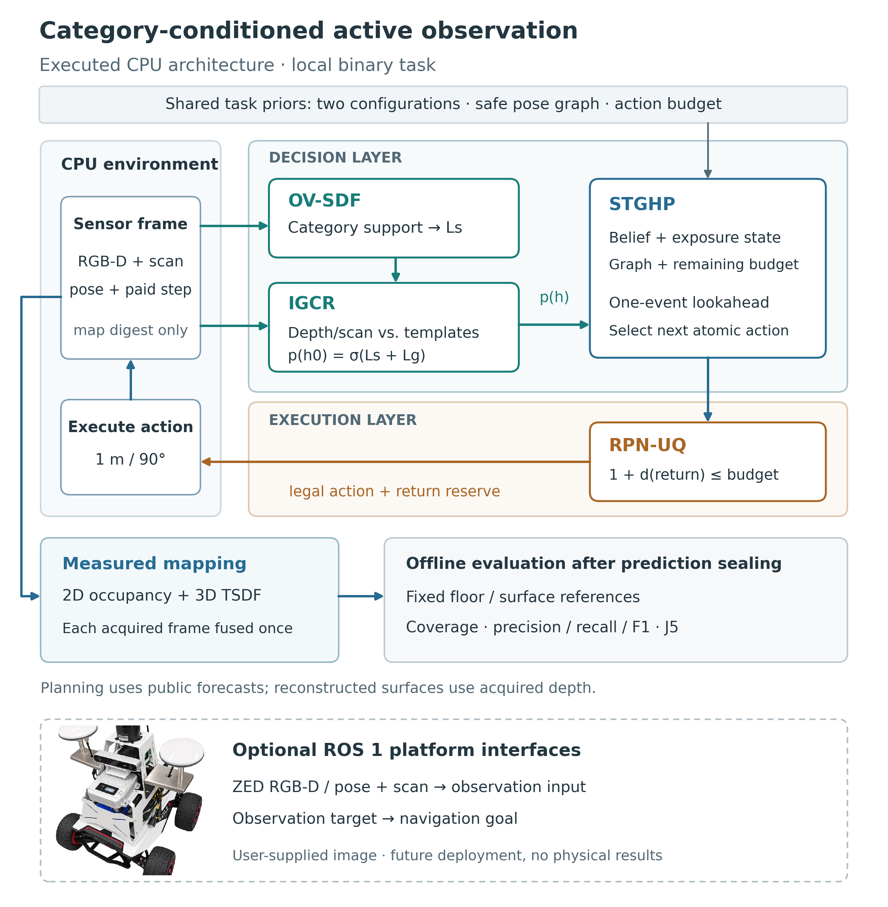
图1 平台接口、四模块CPU虚拟验证与独立重建评价。OV-SDF和IGCR共同更新构型信念，STGHP选出下一原子动作，经RPN-UQ检查后执行并获取新观测。公开模板支持信念与规划，TSDF仅融合实测深度，真值仅用于输出封存后的评价。小车为未经内容修改的用户供图，用于后续ROS 1接口说明；流程框线由程序绘制为矢量图，性能结论来自CPU仿真。PDF。
本节公开安全姿态图和模板属于V35受控机制的输入，不适用于第4章的在线未知探索。
每次执行后，驱动器生成包含RGB-D、扫描、离散位姿、动作及碰撞状态的观测包。控制器先检查步号、动作和位姿是否与前次指令一致，再接收该包。观测包标识不包含实际构型身份，控制器不能访问环境对象、未执行动作的实测结果或终点评价真值。起点帧与后续动作帧分别记录；重复提交同一帧会被拒绝，避免将同一次观测重复计入。
地图融合与规划预测分别维护。真实三维地图由Open3D[4]的CPU TSDF融合已经取得的深度，语义类别不向网格补入模板表面。规划侧则为每个候选构型维护曝光集合 ，表示历史姿态在该模板下可能覆盖的地面和外竖面区域。曝光集合只描述预测潜力，不能被解释为已经准确重建的表面。控制器可读取地图摘要，但当前安全姿态图来自共同公开先验，并不根据带噪占据图在线重建。
两类状态的分离使方法能够利用结构先验规划，又使终点质量由实际传感结果决定。即使某个模板预测某处可见，如果执行时获得的深度缺失或不准确，实际TSDF仍可能不完整；评价器会在任务输出保存后反映这一差异。
规划器用两个构型权重表达当前判断。令  为类别对数先验，
为类别对数先验， 为累计几何对数证据，构型0的权重定义为
为累计几何对数证据，构型0的权重定义为

本章采用人工RGB颜色表示类别，用于单独检验已获得类别信息的决策价值。类别到结构方向的对应关系为公开知识，颜色本身不直接编码运动指令。同一类别在两个不同平面位置分别得到至少16个精确颜色像素支持、且单帧没有另一标记颜色混入后，设置  。这一项相当于固定0.9强度的先验；重复帧不会反复相乘。登记到冲突类别后清零语义先验，以免互相矛盾的语义证据保持高置信判断。该流程是受控类别输入，并非自然设备识别准确率实验。
。这一项相当于固定0.9强度的先验；重复帧不会反复相乘。登记到冲突类别后清零语义先验，以免互相矛盾的语义证据保持高置信判断。该流程是受控类别输入，并非自然设备识别准确率实验。
几何反馈使用实测数据与两个模板的预测差异。仅选取两模板预测不同、且实测有效的位置。对于深度，以参考视差域残差形成截断损失：

其中  为实测深度，
为实测深度， 为模板预测，常数57.6来自参考焦距与基线的乘积。实测零深度作为缺失值忽略，模板无返回而实测有效时取损失上限。扫描使用距离残差除以0.02 m，并采用相同截断形式。深度至少有8个有效像素、扫描至少有3束有效数据才启用对应模态；0.02 m是残差尺度，不表示仿真扫描叠加了该幅度随机噪声。
为模板预测，常数57.6来自参考焦距与基线的乘积。实测零深度作为缺失值忽略，模板无返回而实测有效时取损失上限。扫描使用距离残差除以0.02 m，并采用相同截断形式。深度至少有8个有效像素、扫描至少有3束有效数据才启用对应模态；0.02 m是残差尺度，不表示仿真扫描叠加了该幅度随机噪声。
对有效模态的损失差  取平均，得到支持构型0的增量。单姿态增量与累计证据分别限制为
取平均，得到支持构型0的增量。单姿态增量与累计证据分别限制为

没有有效模态时增量为零。每个精确位置与朝向只在首次观测时累计几何证据，避免相关重复帧过度增强判断；重复姿态的新深度仍可用于实际地图融合。几何证据足够强时能够覆盖错误类别先验，使下一轮规划转向更符合实际结构的候选。上述权重来自固定尺度的鲁棒伪似然，未作概率校准，其含义是相对构型支持度。
错误先验被覆盖需要明确的证据量。若  错误支持构型0，要使构型1支持度达到
错误支持构型0，要使构型1支持度达到  ，应满足
，应满足

若每个合格且实际纳入的反证均满足  ，由初值
，由初值  出发，一个充分数量为
出发，一个充分数量为

右侧条件要求累计证据下界允许达到目标支持度。以  、
、 、
、 为例，一个达到
为例，一个达到  的合格增量已足以覆盖错误先验，第7节给出对应的实际日志。此推导不保证每次观测产生足够反证，也不将支持度解释为经校准的正确概率。首次姿态规则只能抑制精确重复，邻近视角仍可能相关；无效或未被纳入信念的残差不能计入上述数量。地图融合、证据接收和信念更新因而应分别核对。
的合格增量已足以覆盖错误先验，第7节给出对应的实际日志。此推导不保证每次观测产生足够反证，也不将支持度解释为经校准的正确概率。首次姿态规则只能抑制精确重复，邻近视角仍可能相关；无效或未被纳入信念的残差不能计入上述数量。地图融合、证据接收和信念更新因而应分别核对。
机器人需要同时考虑“观察后能记录多少表面”和“观察后能否判断设施构型”。前者是直接建档价值，后者可能帮助后续选择方向。规划状态写为

其中  为已访问姿态集合，
为已访问姿态集合， 为剩余动作预算。对每个构型定义终端代理值
为剩余动作预算。对每个构型定义终端代理值  ：
： 为理想地面曝光比例，
为理想地面曝光比例， 为潜在外竖面曝光面积比例。它们用于行动前比较，不是由当前实测网格计算的覆盖率或表面F1。
为潜在外竖面曝光面积比例。它们用于行动前比较，不是由当前实测网格计算的覆盖率或表面F1。
若机器人位于起点，且两个模板的理想覆盖分别达到80%，主动停止的价值为

其余状态的主动停止不可行。每执行候选动作，剩余预算减一，并将下一姿态的模板曝光加入  。规划采用有限动态规划比较所有合法后续路径，同时检查剩余动作是否足以返航。
。规划采用有限动态规划比较所有合法后续路径，同时检查剩余动作是否足以返航。
为考虑信息作用，每次前瞻最多允许一次未来诊断事件。这一近似保留了信念规划中“观测改变后续行动”的基本关系[12]，并将求解范围限制在当前有限预算内；信息采集与路径成本的共同考虑也与带预算信息规划相衔接[13]。诊断节点由两个公开模板互相比对确定：两种模板各自生成的预测观测，必须分别产生达到  的有符号证据。已经实测的姿态在本次规划入口被排除。到达未实测诊断节点时，假设正确率为
的有符号证据。已经实测的姿态在本次规划入口被排除。到达未实测诊断节点时，假设正确率为  的二元信息通道，两个分支的概率和更新权重为
的二元信息通道，两个分支的概率和更新权重为

诊断后的分支不再预测新的信息事件，而是在相应权重下继续比较建档与返航。记  为是否仍允许诊断，则动态规划可写为
为是否仍允许诊断，则动态规划可写为

任一诊断分支不可行时，候选动作也被判为不可行。0.99是固定预测假设，预测权重仅用于计算行动价值，不写入实际信念。系统每轮只执行最优首动作，然后读取新实测并重新规划，因此可在执行过程中用真实残差纠正预测。
局部守卫再次验证动作是否为公开图的合法边，并要求

其中返航距离包含回到起始位置与朝向所需的动作。碰撞、预算耗尽、计算限制或守卫拒绝均有独立终止记录；程序终止不自动等于任务合格。
下面采用一个简化决策模型说明类别作用，数值算例不作为实验样本。假设两构型等概率，初始几何观测不能区分它们；两条均可返航的路线在与实际构型匹配时得到效用  ，否则为
，否则为  ，且
，且  。共同前缀中取得的类别线索具有对称可靠性
。共同前缀中取得的类别线索具有对称可靠性  。两种策略都可支付代价进行对称几何诊断，其可靠性为
。两种策略都可支付代价进行对称几何诊断，其可靠性为  ，给定构型后与类别线索条件独立。诊断之后两条路线仍可行，诊断造成的机会损失记为与效用同单位的
，给定构型后与类别线索条件独立。诊断之后两条路线仍可行，诊断造成的机会损失记为与效用同单位的  。
。 与
与  是本分析的概率假设，不能用程序中的0.9先验强度和0.99预测参数代替实测校准。
是本分析的概率假设，不能用程序中的0.9先验强度和0.99预测参数代替实测校准。
对于诊断前的构型0权重  ，直接选择正确路线的概率为
，直接选择正确路线的概率为  。诊断后按每种结果选择后验最优方向，其期望正确率为
。诊断后按每种结果选择后验最优方向，其期望正确率为

因此，单次诊断的净决策价值为  。允许G与S自行选择直接观察或先诊断，得到
。允许G与S自行选择直接观察或先诊断，得到


G通过诊断严格改善的条件为  ，S对应的条件为
，S对应的条件为  。例如，人工设定
。例如，人工设定  、
、 、
、 、
、 及
及  ，G选择诊断后效用为0.80，S直接按类别选向为0.82；将
，G选择诊断后效用为0.80，S直接按类别选向为0.82；将  降至0.02，两者均诊断并得到0.86。这些数字只解释阈值，不是TSDF质量测量。
降至0.02，两者均诊断并得到0.86。这些数字只解释阈值，不是TSDF质量测量。
该分析表明，类别线索可通过节省诊断成本产生收益，前提是类别有效且选向确实影响建档结果。类别失效、几何已经消除歧义、两路线价值相同或诊断足够便宜时，优势可能消失。如果诊断使某路线超出预算，应重新枚举可行集合，不能套用上述闭式结果。信息改变后续决策、贝叶斯更新和信息价值均属于已有原则[12,13]；本分析不主张新的推断定理，也不保证更多观测单调提高实际TSDF精度。
在固定合法姿态图、准确动作代价及初始返航可行的条件下， 是局部守卫维护的不变量。每执行一个通过检查的动作，都有
是局部守卫维护的不变量。每执行一个通过检查的动作，都有  ，由此对动作数归纳即可证明始终保留预算内返航路径。该检查也可扩展到成本为
，由此对动作数归纳即可证明始终保留预算内返航路径。该检查也可扩展到成本为  、终点为
、终点为  的宏动作，要求
的宏动作，要求  。执行到中间状态
。执行到中间状态  并花费
并花费  后，未执行后缀接返航路径给出
后，未执行后缀接返航路径给出

宏动作中的显式观测同样必须计费；本章实验控制器仍逐次执行原子动作。上述性质保证模型中返航路径的存在，不保证异常终止后机器人已实际返回。图边失效、真实碰撞或未建模代价会破坏假设；计算失败但未执行返航也不能计为成功。
设图有  个姿态、最大出度
个姿态、最大出度  ，两模板曝光位集长度为
，两模板曝光位集长度为  ，剩余预算为 。一次选择中只有初始权重和一次诊断后的两个固定权重分支，因此记忆化状态数的保守上界为
，剩余预算为 。一次选择中只有初始权重和一次诊断后的两个固定权重分支，因此记忆化状态数的保守上界为

以位集更新和终端评价代价分别记为  ，主要计算量为
，主要计算量为  ，另需图上返航距离预处理。曝光集合带来指数状态空间，缓存不能将其变为多项式规划器。当前150万状态和20 s阈值用于限制单次求解资源；时间每新增1024个缓存状态检查一次，并在选择结束再次检查，因此不是硬实时上界。有限代理搜索的结果也不构成对实测重建质量的全局最优保证。
，另需图上返航距离预处理。曝光集合带来指数状态空间，缓存不能将其变为多项式规划器。当前150万状态和20 s阈值用于限制单次求解资源；时间每新增1024个缓存状态检查一次，并在选择结束再次检查，因此不是硬实时上界。有限代理搜索的结果也不构成对实测重建质量的全局最优保证。
前进1 m和转向90°均消耗一个动作，原确认任务总预算为42。前18步为共同观测前缀，并回到起始姿态；期间积累观测和信念，随后最多24步由当前策略选择。新增预算实验仅改变总预算B，保持18步前缀与控制参数不变。共同前缀使不同策略获得相同的初始非语义经历，便于分析类别带来的行动差异。本章因此验证共同观测后的主动决策过程。
算法1 类别先验与几何反馈驱动的主动观测。
输入：共同安全图、两个公开模板、动作预算、共同前缀
输出：实际动作、观测与信念记录、实测地图、终止原因
初始化类别和几何证据、模板曝光集合、已访姿态集合
循环：
接收起点帧或上一动作产生的观测包，核验步号与位姿
驱动器融合当前实际深度，控制器读取地图摘要
OV-SDF 登记类别；IGCR 按首次姿态实测更新几何证据
更新两个模板的曝光集合及已访问姿态
若发生碰撞或预算耗尽，记录终止原因并结束
若共同前缀尚未结束，选择前缀动作
否则由 STGHP 计算一次诊断前瞻，选择停止或最优首动作
若无可行规划或超过计算限制，记录失败并结束
若选择主动停止，保存决策记录并结束
RPN-UQ 核验合法图边与执行后的返航预算
若守卫拒绝，记录原因并结束；否则执行并读取下一帧
保存全部输出，由独立评价器计算终点质量与任务资格虚拟相机分辨率为96×72，焦距48 px，高度0.9 m，量程4 m；扫描高度0.25 m，覆盖360°、180束，量程8 m。位姿在本章受控实验中准确已知，深度采用参考视差域数值噪声。TSDF体素大小为4 cm、截断距离为12 cm。单次规划最多使用150万缓存状态和20 s，同值候选按固定图边顺序及  容差选择，以保持结果可重复。
容差选择，以保持结果可重复。
为便于解释和复现，表4汇总影响决策的固定设置。0.9、0.99及残差截断来自本实现预先固定的控制参数，未用当前结果进行概率校准，也没有通过本轮文稿修改重新调参。其功能解释不等于这些取值已经达到最优。
表4 决策参数的作用与设置依据。
| 设置 | 固定值 | 实现中的用途与依据 |
|---|---|---|
| 类别先验强度 | 0.9，即对数先验绝对值 |
给予有限的方向倾向，使较强几何证据仍可纠正；是设计设定，不是识别准确率 |
| 未来诊断可靠度 | 0.99 | 作为非完美二元预测通道；诊断节点要求双向证据达到 ，未经传感器概率校准 ，未经传感器概率校准 |
| 类别支持门槛 | 16像素、2个不同XY位置 | 排除孤立颜色点和同位置重复支持，不代表自然分类器的误报率保证 |
| 残差与证据截断 | 损失12.5、单姿态±6、累计±24 | 限制离群残差与重复累积对信念的影响；残差尺度和上限在所有对照间固定 |
| 几何证据累计 | 每个精确姿态仅首次累计 | 减少同姿态相关帧造成的过度强化；TSDF仍融合实际新深度 |
| 预测诊断次数 | 每次前瞻最多1次 | 控制分支数量，执行新观测后重新规划 |
| 缓存与时间上限 | 150万状态、20 s | 单次动态规划缓存重复子问题；上限用于限制计算，超限记录失败 |
| 相等价值处理 | 固定图边顺序、容差 |
保证同分时选择可复现，不能视为类别推断 |
实验比较设置共同几何方法G、类别方法S、错误类别方法X及关闭纠错政策的Xnf。G与S共享规划器、模板、几何诊断及返航能力，仅S使用类别先验；X交换类别解释。Xnf同时关闭实测几何更新和未来诊断预期，因此X与Xnf的差异对应整体纠错政策，不能直接解释为单个反馈函数的贡献。各模式的具体结果在实验章节报告。
以开发批次P00的同一设施为例，两个公开模板分别对应服务侧位于局部负向和正向的构型。以下数值均读取保存的控制器日志；这里用真实构型组织说明，在线控制器只持有两个候选模板。令  表示构型1权重，从而与前述构型0公式保持一致。
表示构型1权重，从而与前述构型0公式保持一致。
共同前缀执行完毕后，机器人处于起始姿态，剩余24步，尚无能够区分两构型的有效几何证据。表5给出此时为第19个动作记录的候选代理值。这些值已经包含后续观察、一次诊断前瞻及返航，是预测终端价值，不是下一帧的实测F1。
表5 同一布局两构型的第19步决策。候选值来自开发批次保存日志，保留六位小数。
| 条件 |  |
左转代理值 | 右转代理值 | 执行动作 |
|---|---|---|---|---|
| 构型0，G | 0.5 | 0.650944 | 0.650944 | 左转（固定同分顺序） |
| 构型0，S | 0.1 | 0.711865 | 0.668008 | 左转 |
| 构型1，G | 0.5 | 0.650944 | 0.650944 | 左转（固定同分顺序） |
| 构型1，S | 0.9 | 0.668008 | 0.711865 | 右转 |
这解释了为何相同方法会出现“有收益”和“持平”两种条件。在构型0中，几何对照的同分选向已经与类别倾向一致；在构型1中，类别先验改变了候选顺序。类别通过改变构型权重影响预算分配，其作用不是直接给某类表面增加终点评分。两条件应共同报告，才能分清方向选择与普遍增益。
继续考虑构型1的错误类别模式X。共同前缀后 ，故  ，第19步仍向左。第28步转向后，在姿态
，第19步仍向左。第28步转向后，在姿态  得到1092个有效区分深度像素；扫描没有可用区分束。两个模板的平均截断损失依次为12.205313和0.505694，因此
得到1092个有效区分深度像素；扫描没有可用区分束。两个模板的平均截断损失依次为12.205313和0.505694，因此


记录中的前进、左转和右转代理值分别为0.574541、0.554660和0.555707，因此下一步选择前进。RPN-UQ读取的剩余预算为14步，执行前进后最短返航成本为13步，恰满足  。到第41步，只剩1步，机器人已到起点位置但朝向尚未恢复；只有左转能通过返航条件，第42步恢复起始姿态。预算约束因此贯穿观察选择与最后的朝向恢复。
。到第41步，只剩1步，机器人已到起点位置但朝向尚未恢复；只有左转能通过返航条件，第42步恢复起始姿态。预算约束因此贯穿观察选择与最后的朝向恢复。
对应的Xnf在第28步获得相同残差记录，但不应用几何更新，构型1权重仍为0.1，第29步选择右转。两模式还同时存在未来诊断开关差异，故终点比较解释为整体纠错政策；同状态权重干预另用于核对实测反馈与动作变化的联系。该实例把OV-SDF的先验、IGCR的残差、STGHP的价值比较和RPN-UQ的返航检查串成一次可核对的闭环。
前七节描述产生原双构型实验结果的局部控制器。两版策略名称分别解释：局部S相对G增加类别条件信息；场景级B已具备固定类别先验，场景级S再增加同类模型证据共享。旧S的正结果不能解释为新S相对B的共享收益。本节另定义多实例场景级扩展：面向工业布局调整后的主动建档，单次任务内设备和障碍保持静止；每个场景有四个设施，分属两个重复类别。每个在线实例维护平面、凹入、百叶和开放框架四种结构假设。实例身份及局部标签平面由已取得的观测建立，真实设施位置与当前结构不输入规划器。保守导航图、准确模拟位姿、人工类别标记和公开名义结构族仍是本阶段的共同条件。
四模块与决策—执行层次保持不变，但内部状态和规划粒度有所扩展。OV-SDF组织实测实例支持、类别资格与四构型信念；IGCR由当前关联深度形成受限几何证据；STGHP选择到达一个观察姿态并付费观察的宏动作；RPN-UQ核验原子动作、当前障碍约束及完整姿态返航预算。该CPU实现不包含新训练的识别或风险预测网络。完整RGB-D与扫描继续交给共同地图后端，类别与名义模板不向TSDF补入未观测表面。
设 为实例
为实例 的累计几何证据，
的累计几何证据， 为均匀结构先验，
为均匀结构先验， 为公开类别先验。实例信念为
为公开类别先验。实例信念为

G使用均匀先验；B固定 ，但正常接受自身几何反馈；S由其他合格同类实例的几何证据更新该权重。共享采用留一形式，自身证据仅进入一次，累计同伴消息更新时替换旧消息，避免反复乘入历史。
，但正常接受自身几何反馈；S由其他合格同类实例的几何证据更新该权重。共享采用留一形式，自身证据仅进入一次，累计同伴消息更新时替换旧消息，避免反复乘入历史。 表示两种先验模型的相对权重，不是已校准的类别识别正确率。类别资格要求至少两个合格支持帧、每帧至少四个对应标记像素，且没有类别冲突或当前关联歧义。类别值不用于决定几何支持属于哪个实例。
表示两种先验模型的相对权重，不是已校准的类别识别正确率。类别资格要求至少两个合格支持帧、每帧至少四个对应标记像素，且没有类别冲突或当前关联歧义。类别值不用于决定几何支持属于哪个实例。
| 策略 | 自身几何反馈 | 类别先验 | 同类实例共享 | 一次付费诊断前瞻 |
|---|---|---|---|---|
| NBV | 保留 | 不使用 | 不使用 | 不使用，仅比较直接视角 |
| G | 保留 | 不使用 | 不使用 | 保留 |
| B | 保留 | 固定混合 | 不使用 | 保留 |
| S | 保留 | 可由同伴证据调整混合权重 | 保留 | 保留 |
因此，S/B主要检验跨实例共享，B/G检验类别条件信息，G/NBV检验有限诊断规划。几何对照仍能根据不确定性与候选几何收益决定补看；不能以取消其正常补看能力来构造语义优势。NBV为共同实现中的机制对照，不是外部完整系统的复现。
深度支持缓存与有效证据资格分开。重复包、当前实例歧义和无信息残差不能反复强化后验；缓存饱和后的补救反馈仍须通过新增空间支持、视角间隔和最大有效帧数检查。单帧标签平面不能可靠确定时，允许使用多视角实测点估计平面，并检查噪声、公开标签尺寸、锚点及偏航不确定度；后续冲突会撤销其有效性。完整共享公式、证据限幅、缓存和多视角参数见多实例方法附录A—C，不将这些工程条件表述为新贝叶斯理论或精度保证。
候选池最多包含32个姿态，每个已观测实例最多进行8个候选表面预测。令 为未知区域面积代理，
为未知区域面积代理， 为构型在候选
为构型在候选 的名义新增外表面积，为包括朝向变化的最短原子动作成本，直接视角评分为
的名义新增外表面积，为包括朝向变化的最短原子动作成本，直接视角评分为

分母同时计入到达、一次显式观察和完整姿态返航。诊断方案预测一次观察后的结构证据，再在同一组预算可行的后续姿态中选择最终视角；先对全部实例求收益和，再选择共同姿态，不能为不同物体分别选择互不兼容的最优路线。后续视角的收益按“到达诊断点—观察—到达最终点—观察—返航”的完整代价归一化。第一视角的表面代理不重复加入最终收益，运动过程中取得的真实深度仍照常融合。名义模板通道没有建模场景外部遮挡和定位误差，评分不是实测F1，也不是对全部未来路线的最优求解。
系统只承诺执行第一个宏动作；新的实际观测可以使其完成、取消或失去可行性，再触发重规划。每次0.25 m前进、30°转向和显式观察均收费一个动作并取得一个传感包；任务只共享一次零动作代价的初始帧。没有可靠平面的实例可以进入共同几何初始化，每实例最多尝试两个目标，全局已执行初始化成本不超过 。这与旧控制器的18步固定前缀、1 m平移和90°转向不同，历史动作数不能直接混合。返航守卫仍依赖合法固定图和动作成功执行；新增障碍可能导致停止或失败。
。这与旧控制器的18步固定前缀、1 m平移和90°转向不同，历史动作数不能直接混合。返航守卫仍依赖合法固定图和动作成功执行；新增障碍可能导致停止或失败。
场景开发发现，深度连通支持可能沿地面连接相邻设施，使原本已经观察到的实例重新出现关联歧义，并推迟类别、几何反馈与共享资格。为隔离这一问题，共同前端修正只从对象关联候选中去除经过当前付费深度核验的地面带。它使用相机安装高度和已知竖直方向，在空间跨度、支撑像素、估计高度及噪声检查通过时生效；不通过则保留原始关联输入。所有方法使用同一规则，不读取类别、真实设施坐标或结构。
完整深度仍进入占据地图和TSDF，因而该修正改变的是信息归属，不是删除评价区域以提高分数。当前实现假设水平静态地面及准确相机标定，对非平面地面和贴地设施边缘仍有局限。固定路径回放只能检验信息资格和时序，是否改变实际观察路线与质量须另由闭环对照判断。
场景级评价采用实际测为空闲的可导航区域覆盖 、全部四实例表面F1的宏平均
、全部四实例表面F1的宏平均 ，以及
，以及 。预测使用完整网格，参考固定为各设施的可观测表面；未发现设施不从分母删除。该指标与前文公共ROI下的局部
。预测使用完整网格，参考固定为各设施的可观测表面；未发现设施不从分母删除。该指标与前文公共ROI下的局部 不同，定义和测量边界在实验章单独说明。
不同，定义和测量边界在实验章单独说明。
地面处理改善实例关联后，名义模板仍可能对同一位置的重复转向持续给出新增表面奖励。原因在于名义结构包含多个尺度：已经取得的真实支持可以覆盖中心尺度的表面，却未必靠近缩小或放大的模板点。仅按“与实测支持的距离”扣除面积，不能保证这些点对应新的观察机会。
独立的曝光去重版本为所有方法增加同一规则。对实例与构型的名义采样点集合，令  表示候选姿态下通过视锥、量程、朝向及原型自遮挡检查的点，
表示候选姿态下通过视锥、量程、朝向及原型自遮挡检查的点， 表示距离已有实测支持大于0.08 m的点，
表示距离已有实测支持大于0.08 m的点， 为历史已取得相机中、与候选光心相同且内参与图像尺寸兼容的名义可见点并集。修正后的面积为
为历史已取得相机中、与候选光心相同且内参与图像尺寸兼容的名义可见点并集。修正后的面积为

其中  为原采样点面积权重；对原有结构与尺度分别计算后，沿用原平均与信念加权。相机位置与内参的相等判断采用绝对
为原采样点面积权重；对原有结构与尺度分别计算后，沿用原平均与信念加权。相机位置与内参的相等判断采用绝对  容差。平移候选不继承其他光心的排除，同点转向进入新的有效视野仍可获得正面积。历史包括原系统已有的初始帧，没有新增免费预观察。
容差。平移候选不继承其他光心的排除，同点转向进入新的有效视野仍可获得正面积。历史包括原系统已有的初始帧，没有新增免费预观察。
被排除的是曾经尝试过的名义曝光机会，不是已重建表面。该集合不能加入实例实测支持，也不能写入TSDF。外部遮挡、缺失深度恢复、像素采样变化和重复测量的精度改善仍未显式建模，因此该规则只修正重复领取名义新面积的问题，不构成重复观察无价值的证明。其实际收益须由独立版本的完整闭环结果评价。
当前每类最多有两个正确关联的实例，目标因此最多接收一个同类同伴。令同伴的非负几何似然为  ，其对类别模型与均匀模型的证据比为
，其对类别模型与均匀模型的证据比为

因此，弱类别先验与一个同伴不能把模型权重任意推向0或1。固定目标自身证据后，候选面积的后验期望关于  为分母严格为正的线性分式，其导数符号不变。比较两个固定候选时，可以在可达区间两端求每实例分数差的极值，再按实例相加，得到保守排序包络。不同实例的端点不一定可以同时实现；只有连这个更宽的包络都无法越过排序边界时，才能排除当前直接视角子问题的变化。
为分母严格为正的线性分式，其导数符号不变。比较两个固定候选时，可以在可达区间两端求每实例分数差的极值，再按实例相加，得到保守排序包络。不同实例的端点不一定可以同时实现；只有连这个更宽的包络都无法越过排序边界时，才能排除当前直接视角子问题的变化。
该分析解释为什么“共享改变了后验”不等于“共享改变了动作”。它不覆盖新候选、诊断宏动作的重新选择和未来轨迹，也不能直接转换为实测F1或联合指标的上界。论文应分别检验信息到达、分数变化、动作变化和实测表面收益，不以模块存在代替贡献验证。
本章围绕有限运动预算下的设施建档，给出了四模块协同的CPU主动观测实现。类别先验用于在几何歧义尚未消除时形成观察倾向，实测残差用于纠正构型判断，有限诊断前瞻将信息获取与后续建档联系起来。条件分析说明类别线索何时可能节省诊断成本，以及实测反证覆盖错误先验所需的支持量；返航守卫在固定图与准确代价条件下维护预算内返航路径。实际地图始终由取得的深度构建，终点评价与规划代理分开计算。局部实现与独立多实例扩展分别用于检验方向选择、纠错和跨设施观察分配，历史二元公式不追溯替代新的四构型宏动作规划。实例关联与信息到达时机是场景级决策的必要实现条件；是否带来收益仍由实际路线和重建结果检验，解析条件不替代实验。
面向未知大场景的主动覆盖探索需要在地图不完整时持续选择可执行的观察位置。本章以未知区域覆盖为主要目标，以已测表面的补充观察为联合目标：机器人依次获取激光扫描、RGB-D图像和位姿，在当前已知可行区域中规划，将执行后的新观测用于更新地图和下一次决策。与前述公开安全图、候选模板及准确位姿的受控设施建档任务不同，这里不预先提供全局安全姿态图；真实部署仍从初始观测开始，初始地图并非空白。两项任务的输入权限、方法版本和评价指标不同，其结果分别报告。
设时刻  的二维占据状态为
的二维占据状态为  ，分别表示未知、已知空闲和占据；
，分别表示未知、已知空闲和占据； 为由已接受深度帧融合得到的表面地图，
为由已接受深度帧融合得到的表面地图， 为实际相机位姿和观测历史。机器人状态为离散位置及朝向
为实际相机位姿和观测历史。机器人状态为离散位置及朝向  ，初始返航锚点为 ，剩余动作预算为 。候选宏动作
，初始返航锚点为 ，剩余动作预算为 。候选宏动作  包含从当前状态到目标的去程和从目标返回锚点的返程。候选必须位于当前观测构成的安全图中，并满足去程与预留返程的动作代价之和不超过剩余预算。该约束依赖当前地图和圆形轮廓，不能解释为未知环境中的绝对安全保证。
包含从当前状态到目标的去程和从目标返回锚点的返程。候选必须位于当前观测构成的安全图中，并满足去程与预留返程的动作代价之和不超过剩余预算。该约束依赖当前地图和圆形轮廓，不能解释为未知环境中的绝对安全保证。
数据流为：扫描与定位输入更新二维地图；RGB-D及对应位姿更新实测表面和相机观测历史；语义前端在实际图像上给出类别支持，结合测量点形成结构对象假设；规划器依据当前地图、历史、预算和候选轨迹计算覆盖与表面观察代理，选择下一宏动作；执行端逐步下发动作并检查实际反馈，再以新观测进入下一轮。TSDF只融合实际取得的深度，候选可见性和结构潜力是规划预测，不作为新观测或重建真值。ROS导航避障与硬件停止保护是执行层保护，研究策略中的已观测安全图和返航预算检查则属于决策过程；共同保护层本身不证明策略与其他版本等价。
原始 v10.3.1 CPU 实现采用基于已观测增益反馈的总量评分。对去程状态序列  ，令
，令  分别为预测的激光和相机增益掩码，
分别为预测的激光和相机增益掩码， 为网格边长，
为网格边长， 为实际观测反馈更新的增益后验均值，
为实际观测反馈更新的增益后验均值， 为已测表面质量增量代理。公共项可写为
为已测表面质量增量代理。公共项可写为

这里 对应代码中由候选响应特征、已有质量点数、 和去程动作代价计算的代理；它不是独立真值F1。返程用于可行性和预算核算，不被计入预期去程收益。预测与随后接受的观测相比较，反馈用于更新后验；预测未实现和预测外实现均应保留。选择时比较候选总评分，分数相同时按代价等既定规则打破平局，而不是把预测面积直接视为实际覆盖。
和去程动作代价计算的代理；它不是独立真值F1。返程用于可行性和预算核算，不被计入预期去程收益。预测与随后接受的观测相比较，反馈用于更新后验；预测未实现和预测外实现均应保留。选择时比较候选总评分，分数相同时按代价等既定规则打破平局，而不是把预测面积直接视为实际覆盖。
对已测结构对象 ，记测量宽、深、高为  ，类别投票为
，类别投票为  ，是否具有标记测量支持为
，是否具有标记测量支持为  。代码中的一般几何势与类别势分别为
。代码中的一般几何势与类别势分别为

对象的候选因子  来源于候选去程可见支持与历史观测；启用实测方向版本时，它取去程各状态的孔径支持均值与方向新颖度因子的乘积最大值，其中方向分为八扇区，新颖度下限为0.25。于是实际 G 和 S 两种评分为
来源于候选去程可见支持与历史观测；启用实测方向版本时，它取去程各状态的孔径支持均值与方向新颖度因子的乘积最大值，其中方向分为八扇区，新颖度下限为0.25。于是实际 G 和 S 两种评分为

它们共享覆盖与质量项；S只对有标记支持的对象使用类别势。类别支持、候选中的有效可见方向以及对象因子同时具备时，类别项才可能改变排序。该公式是规划代理，不意味着类别识别正确，也不保证S优于G。完成动作后系统更新占据、表面与历史；若原宏动作因新地图失效，已授权部署变体重新规划。若当前轮廓或锚点在已观测图上不满足条件，则停止，不能将停止解释为成功返航。
实车采用基于 v10.3.1 的显式修订版本 exploration_joint_v1。它将相机增益限定到占据未知且未见、未尝试的格子，保留按空间分箱分散的覆盖候选，并在去程宏动作失效后重新规划；这些会改变候选或决策，必须作为部署变体报告。相机及激光的预测范围分别适配为4 m和8 m，也会影响排序。部署以0.2 m网格及半径约0.7212 m的原圆形轮廓构造安全图，保留ROS常规避障和硬件停止保护。该变体与原 v10.3.1 及前述V35公开姿态图机制均不是同一策略。
实车的数据来自真实RGB-D、激光扫描及底盘反馈。CSM激光里程计与gmapping提供定位建图，ROS承担导航执行，TSDF融合接受的深度，YOLOE-v8s-seg提供自然图像的语义支持。实车采用声明的 real_scene_structural_v1 类别映射：例如柜体或展示柜可对应闭合结构假设；这是部署先验，不能写成原始类别语义或独立验证的识别准确率。仿真使用虚拟传感和已知评价参考，分别运行原 v10.3.1 与部署策略变体；部署策略仿真关闭物理适配器，不能把仿真评分差异直接归因于实车部署。
表4-1汇总可直接追溯的结果。首帧仿真采用两个互换布置、两档预算和G/S，合计八条执行；两个布置是同一受控场景的互换，不是两个独立自然场景。起始二维覆盖率均为61.50%，因此这一组可观察从部分未知状态出发的变化。旧151帧共同前缀的初始二维覆盖已为100%，不用于证明未知空间探索。
表4-1 未知探索仿真与实车记录的证据范围。
| 证据 | 条件与独立单位 | 记录结果 | 可支持的范围 |
|---|---|---|---|
| 原v10.3.1首帧仿真 | 两个互换布置×48/96动作预算×G/S，共8条 | 48步两布置G/S均为89.86%；96步west G/S为99.91%/99.82%，east均为99.91% | 固定矩阵中的覆盖结果；west 96下S低于G，其余持平，不支持实车效益或跨场景泛化 |
| 部署策略首帧仿真 | exploration_joint_v1 策略，物理适配器关闭；同一Q0的两布置×48/96步×G/S，共8条 | 48步两布置G/S均为93.57%；96步west G/S为99.82%/99.91%，east均为99.82% | west 96下S高于G，其余持平；条件仿真，不是实车自然语义收益 |
| 11/4闭环 | 一个部分已知现场，exploration_joint_v1，40付费动作，41帧含初始 | 40次到达并返航，CAN里程6.83485 m，耗时527.66 s；观测面积代理72.84增至120.00 m² | 单次集成及闭环可行性；面积为内部代理，非独立覆盖准确率 |
| 11/4评分 | 上述完整闭环的12次规划 | 所有同候选S与G得分相等，所选第一候选相同 | 该轨迹中未观察到评分差异；并非独立G轨迹比较 |
| 11/7中止 | 2次付费动作，3次观测 | 4个ROS目标中3次到达，CAN 1.609 m、221.139 s，因里程计跳变停止 | 同日早先失败保留，不与成功轮次合并 |
| 11/7闭环 | 40付费动作（36前进、4转向），41次观测含初始，12次规划 | 40个ROS目标成功且worker接受，预算耗尽返锚点；CAN 7.393506 m、542.443944 s；面积代理72.08→128.28 m²，旧表面质量代理0.213760→0.199107 | 不同执行配置的单次集成；地图保留先前观测，信念新建；12次规划S/G同分，前2次为多候选 |
| 11/4续行 | 沿用当日41帧，新40动作预算仅执行7次；依赖前轮 | 7次到达；1.11935 m、114.51 s；面积代理+4.72 m²；未返航 | 依赖前轮；非连续80动作策略 |
两组矩阵均报告最终网格表面与固定仿真参考之间的双向距离F1；结果键 f1_05cm 中的“05cm”表示5 cm，即0.05 m，并非0.5 cm。表4-2列出全部配对的覆盖率与该F1。部署策略矩阵只替换策略，物理适配器关闭，其虚拟传感与受控语义条件不能证明真实YOLOE带来收益。部署策略在west、96步的S相对G的F1提高0.03731；其余三对相等。原版同条件S相对G降低0.02057，其余三对相等。两个布置和预算之间共享场景条件，这些差异是开发性结果，不能作为独立场景统计。
表4-2 原版与部署策略的覆盖率和表面F1。
| 策略 | 布置 | 预算 | G覆盖率 / F1@5cm | S覆盖率 / F1@5cm |
|---|---|---|---|---|
| 原v10.3.1 | west | 48 | 0.89855 / 0.88569 | 0.89855 / 0.88569 |
| 原v10.3.1 | west | 96 | 0.99909 / 0.96890 | 0.99819 / 0.94833 |
| 原v10.3.1 | east | 48 | 0.89855 / 0.88304 | 0.89855 / 0.88304 |
| 原v10.3.1 | east | 96 | 0.99909 / 0.98571 | 0.99909 / 0.98571 |
| 部署策略 | west | 48 | 0.93569 / 0.89094 | 0.93569 / 0.89094 |
| 部署策略 | west | 96 | 0.99819 / 0.94557 | 0.99909 / 0.98288 |
| 部署策略 | east | 48 | 0.93569 / 0.88832 | 0.93569 / 0.88832 |
| 部署策略 | east | 96 | 0.99819 / 0.96383 | 0.99819 / 0.96383 |
进一步以同一部署策略候选生成器构造覆盖评分消融C：C只按式中激光和相机的覆盖代理排序，不加入表面质量项和对象势；它不是标准frontier规划器，也不是独立外部基线。四条C结果如下。48步两布置的C、G、S覆盖和F1均相等；96步下C的F1分别为west 0.94256、east 0.95524，均低于相应G/S结果，覆盖率分别与G相等、与east的S相等。east的C在94步回到锚点后因无正收益候选停止，未耗尽96步上限；其余三条C及16条G/S均耗尽预算。20条均返航，模拟碰撞为零。这些是该受控矩阵内的评分消融，不能据此推断外部算法排名或实车效率。
| 布置 | 预算 / C实际步数 | C覆盖率 | C的F1@5cm |
|---|---|---|---|
| west | 48 / 48 | 0.93569 | 0.89094 |
| west | 96 / 96 | 0.99819 | 0.94256 |
| east | 48 / 48 | 0.93569 | 0.88832 |
| east | 96 / 94 | 0.99819 | 0.95524 |
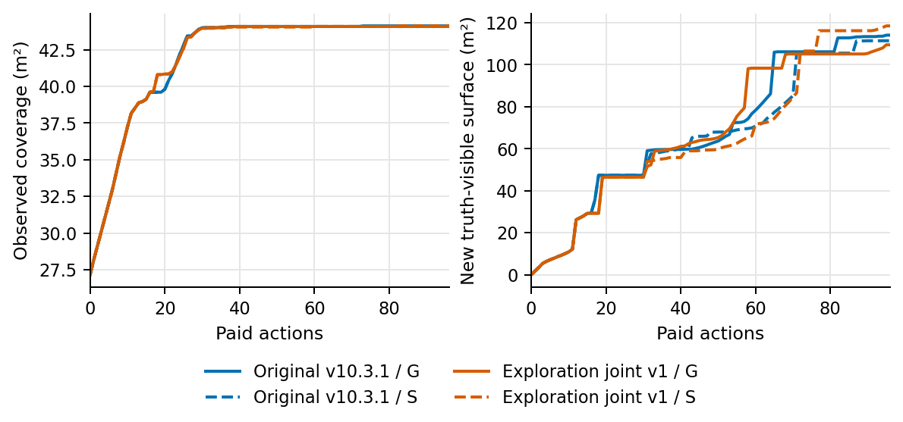
图4-1 west布局96步受控仿真过程。左为已观测面积，右为相对首帧新增、以真值为参考的可见表面面积；横轴为付费动作。原版和部署策略的G/S分别绘制；图仅为一个Q0场景的两个版本结果，不包含C，不能解释为实车路径。两版本的S/G相对结果反转发生在该预算条件，不能由此推出普遍规律。
部署策略west 96的G/S在5 cm阈值下召回率为0.89716/0.96734，精确率为0.99950/0.99892；预测表面至参考的平均距离为0.00373/0.00431 m。F1差异主要对应召回变化，S的点级精确率略低且平均距离略大，不能据此声称点级精度提高。
11月7日轮次在40次付费动作（36次前进、4次转向）后按预算耗尽返回原离散锚点，40个ROS目标均成功且被原worker接受；41次观测包含初始观测，不能作为41次独立实验。CAN里程7.393506 m、耗时542.443944 s。面积代理由72.08增至128.28 m²，而固定旧表面支持上的质量代理由0.213760降至0.199107，二者分别保留，不能把面积增长解释成表面质量提高。导航地图保留此前实测观测，联合信念重新初始化，因而这不是新地图起点或匹配重复试验。该轮采用默认CSM关键帧、CAN控制速度和固定SE2坐标对齐；相机搬动后仍沿用未经更新验证的旧外参，显式关闭旧自遮罩。这些执行与传感适配不等于原方法无改动，也不证明故障因果修复。最后到达后external-guard清理触发适配器native_driver_fault:8代码，不将其解释为独立确认的底盘硬件故障；清理后CAN反馈为零不等于独立物理停车测量。
此前完整轮次的12次规划与本轮12次规划分别审计，所有共享候选的S/G得分均相等，未观察到语义改变排序。本轮前2次分别含5、2个候选，后10次各仅1个候选；单候选状态不能视为竞争选择实验。前2个多候选状态中，标记组的日志增量孔径贡献为零；这一同状态诊断不验证目标关联或识别准确率，也不是独立执行的几何策略轨迹。历史依赖续行在7次动作后因轮廓安全判定中止、未返航的负结果继续保留。
11月4日的后续运行使用当日完整轮次41帧实际观测作为初始化，但并未恢复原规划增益历史，因此既不是独立场景，也不是未经中断的原80动作策略。第7动作后新观测使当前圆形轮廓被判为不满足已知安全条件，运行停止而未返航。审计发现一个深度点落在冲突格，并对应画面中的黑色矩形物；其是否为外部物体或车体附件尚待现场确认。不能将其断言为噪声，也不能在身份未明时将其当作已知自车。离线对象支持分析属于诊断，不能代替重新执行的策略比较。
随后在同一场景按预定C→S顺序进行一次覆盖评分与联合评分实车试验。两臂分别新建独立stock gmapping导航地图及策略会话，CSM里程计与显示TSDF保持连续；候选、圆形轮廓、返航规则、传感配置、40动作预算、600 s时限与执行保护相同，策略配置仅评分模式不同，C仍接收相同模态。实际初始位姿相差0.0701 m、0.0672 rad，初始导航已知格掩码在共同0.2 m规划网格上有205格（8.20 m²）异或差。这是近似起始条件的有序试验，不能称输入完全匹配。
| 方法与终止 | 付费动作/观测 | CAN里程/耗时 | 内部面积代理m² | 各自旧支持质量代理 |
|---|---|---|---|---|
| C：预算耗尽、返锚点 | 40/41 | 6.741 m/558.214 s | 66.40→123.44 | 0.249536→0.190989，270点 |
| S：方法失败、未返航 | 32/33 | 5.233 m/451.992 s | 65.32→122.00 | 0.234949→0.299275，290点 |
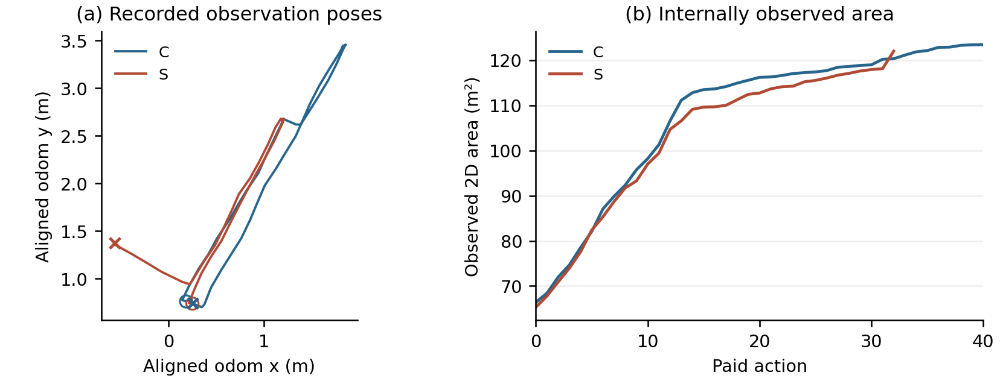
图：原始观测RGB-D时刻的aligned odom基座位姿采样连线，以及随付费动作变化的内部已观测面积。空心圆为初始观测、叉号为末次观测；连线不是高频轨迹或独立真值。S在第32动作终止，不外推到40。一个场景的一次有序配对包含两个相关轮次，无误差条。
C完成40动作并返回离散锚点。S的第32次动作与观测被接受后，原有圆形轮廓检查报告current_footprint_not_known_safe，方法失败且未返航；并未新增策略门槛。两轮清理后CAN反馈为零。不同实际动作数、S失败返航及初始信息差异均保留，因此不能按覆盖终值或路程直接判定效率优劣，也不能把路线差异归因于评分。270点与290点的初始旧表面支持身份不同，C质量下降与S质量上升分别是各臂内部变化，不是共同参考下的精度对照。这是C/S目标消融，不是隔离语义作用的S/G比较。
两轮均在已完成12动作后触发原next-footprint检查并重规划；在各轮自身的冻结状态中C/S选择一致，但跨轮地图状态不同。S的第31动作后，冻结状态C无正候选，而G和S选择同一正候选。这些是既有状态反事实，不是额外实车试验；G/S同分未建立语义决策作用。
对S保留观测的原mapper-only回放复现末次belief：一个0.504 m实测激光回波在深度融合前写入近处占据格，而输入导航网格单独仍满足该轮廓检查。这定位了原记录中的融合来源，尚未验证对应物体身份或噪声、定位等物理成因。
为补充外部形式的几何探索对照，在相同首帧、锚点和预算下加入四条本地 observed FrontierPolicy 轨迹。该实现以已观测空闲且对占据格膨胀后的可达格为基础，提取与未知格相邻的边界连通分量；每分量按距离确定性抽取至多四个代表点，加上当前位置后按距离排序，最多保留24个候选。四个朝向按视域内可见未知格计增益，nearest_frontier 优先距离，再按增益和格坐标破同分；无候选时原地扫描，最多四次后停止。它是已有的局部frontier实现，并非完整ROS explore_lite。其执行适配器的共同guard按未知格和占据格检查安全轮廓，并检查执行后的已知返航预算；探索动作首次被拒绝便永久转入返航，策略停止也转入返航。该契约不等价于NSO对候选的预筛和失效后的重规划，不能把差异仅归因于评分。四条件矩阵在west 48的smoke之后冻结且未调参；矩阵中的west 48精确复现该smoke，不是额外独立样本。四次运行各发生一次预算guard干预，分别在west 48/96的第23/76次和east 48/96的第23/53次已完成动作之后，均返航、无模拟碰撞，并耗尽预算；没有策略停止触发返航。
表4-3 Frontier与部署联合策略G的固定矩阵对照。 面积增量和表面面积单位均为m²；表面为相对首帧新增、使用仿真参考计算的可见表面，F1阈值为5 cm。四个条件共享同一Q0及相关互换布局，不是独立场景；联合S与G的对应差异见表4-2。
| 布置 | 预算 | Frontier覆盖增量 / 新可见表面 / F1 | 联合G覆盖增量 / 新可见表面 / F1 |
|---|---|---|---|
| west | 48 | 15.00 / 84.12 / 0.8158 | 14.16 / 96.58 / 0.8909 |
| west | 96 | 16.88 / 107.23 / 0.9359 | 16.92 / 109.51 / 0.9456 |
| east | 48 | 15.00 / 84.02 / 0.8130 | 14.16 / 96.46 / 0.8883 |
| east | 96 | 16.76 / 96.56 / 0.8751 | 16.92 / 114.00 / 0.9638 |
在两种布局中，frontier第20动作达到95%覆盖，而96步联合G/S均在第24动作达到；96步下联合G/S第29动作达到99%，frontier第32动作达到。48步预算下frontier覆盖增量较大，但新可见表面和F1较低，结果体现不同目标和返航契约的权衡，不构成普遍排名。west、96步的联合S与G在第31动作首次出现表面差异，此时两者覆盖均为99.55%；两者到达90%、95%、99%的动作分别同为18、24、29。因此，该条件中的语义表面差异不能写成语义改善未知覆盖效率。全部24条轨迹包括原版8条、部署G/S 8条、同候选C消融4条和frontier 4条；它们共享Q0受控场景，均不是实车比较。
对四个frontier拒绝点的回放与原记录packet一致；剩余预算与完整最短返航代价分别为25/25、20/20、25/25和43/43。在相同已观测安全朝向图上枚举预算可负担的非零出发姿态，并按原baseline的4 m、90°、仅依赖belief的未知增益代理计算，四处正增益目标均为零；可行的原地转向可能是最短返航的一部分。这不能排除未来观测带来的收益，也不证明所有frontier或ROS实现的公平性，适配器契约差异仍然存在。
对168个已记录规划状态作事后标量等价审计，其中86个是S轨迹实访状态，82个是G实访状态上的S评分反事实。在一个状态——部署策略west/96的S轨迹第3次规划、已付费41动作——对于保存的候选集，任何非负统一几何先验权重均不能复现S所选目标；此时覆盖已达99.728%，不属于早期覆盖。该状态由审计后选择。
从完全相同的41动作S前缀出发，S、G和G×2分别续接一次并均完成返航；S完整复现原归档，G与G×2逐步一致。相对于G/G×2，S在切换后新增的参考可见表面多0.099926 m²，新增已观测面积少0.04 m²，路程少0.8 m，终点F1@5 cm低0.001203。这是后验选状态的晚期单例干预，终点结果混合，不能证明普遍或实车语义收益；双房间G×2完整复现S的负归因结果单独保留。这些续接不增加原24条矩阵样本数。
另行构造一个Q0 shelf-west派生的双房间受控场景，沿用设备、传感配置、噪声种子和合成RGB标记语义，增加带1.6 m门洞的隔墙。最初门洞位置在几何预检中受阻，观察任何策略轨迹之前已调整；模拟器和评价器使用参考几何，策略仅接收虚拟RGB-D、扫描和准确模拟里程计。这两条轨迹与前述24条Q0矩阵分开报告，但同源相关，不是独立自然场景或实车证据。
表4-4 双房间G/S及事后G×2结果和首次覆盖阈值。 表面为相对首帧新增、由仿真参考计算的可见表面；F1阈值为5 cm。
| 方法 | 起始/终点覆盖 | 首达90/95/99%动作 | 新可见表面 m² | F1@5cm | 路程 m |
|---|---|---|---|---|---|
| G | 60.12% / 99.01% | 22 / 26 / 58 | 123.97 | 0.9119 | 16.8 |
| S | 60.12% / 99.01% | 22 / 26 / 56 | 126.58 | 0.9221 | 16.4 |
| G×2（事后） | 60.12% / 99.01% | 22 / 26 / 56 | 126.58 | 0.9221 | 16.4 |
两者均在第19动作穿过门洞，执行96次付费动作、零模拟碰撞并返航，终点覆盖相同。第19个付费动作后的第二次规划，覆盖率为86.61%，共同历史、候选列表和审计哈希一致；G选择候选3，S选择候选7。G对候选3的领先分差为0.044313，S对候选7的领先分差为0.290468，均为严格领先而非同分规则。事后对同一候选集将几何先验按标量重加权，当λ > 1.08973877时也选择候选7；因此该单状态记录尚未区分语义类别相对重加权几何先验的独特优势，该标量审计本身只涉及单一状态。 在观察原G/S结果及标量审计后，另固定几何对象先验权重为2，事后执行一次96动作控制。其96步动作、位姿、观测哈希、覆盖及表面过程与S完全一致，13次规划目标及终点F1、表面面积和路程也相同。该控制不是前瞻独立基线；在本例中，几何先验重加权可复现S的完整差异，不能隔离类别信息特有收益。两候选共同覆盖与质量项分别为9.953、9.415，G对象先验项为6.838、7.332，S为11.721、12.550，先验条件下的排序发生反转（图4-2）。首次执行动作及表面差异均在第31动作，此时两者覆盖均为98.31%。终点差异包含后续完整轨迹，不能归因于单次动作；该结果支持合成标记条件下的评分机制，不证明跨场景泛化、自然语义或实车效率收益。
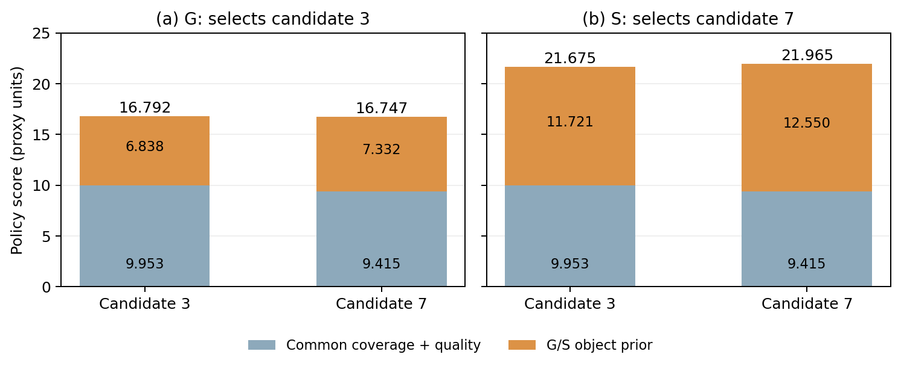
图4-2 同一仿真观测状态下两个选中候选的评分组成；共同项与对象先验均为规划代理，并非重建质量或额外实测观测。参考场景仅用于模拟和评价。
本章给出了未知区域覆盖和已测表面观察共同参与候选选择的数据流，并保留了实际部署相对原实现的决策变化。原始、部署策略及frontier仿真矩阵提供受控首帧覆盖记录，实车记录提供单场景闭环与中止案例；二者均不能单独建立未知大场景的效率优势。后续应在相同初始信息、传感器、预算、返航契约与执行保护下，取得匹配实车覆盖基线及独立重复，分别报告时间、路程、覆盖增量、失败和返航；还需以可改变候选的自然语义条件检验语义决策作用，并以独立参考评价表面重建精度。在这些证据取得之前，面积代理、自然语义连接和运动完成分别描述观测、接口与执行，不能合并为语义增强带来高效精确重建的结论。
设施建档同时关心机器人是否看过可达区域，以及设施表面是否被充分重建。二维地图已有较高覆盖时，设备背面、开口和凹入区域仍可能缺失。因此，“继续扩大覆盖”和“补充有效表面观测”并不总是同一决策。本章围绕预算受限的设施建档，检验类别知识能否帮助机器人提前选择观察方向，并检验错误类别是否能够被实测几何证据纠正。
局部机制实验按三个问题组织；第10节另报告多实例场景级开发与共同评价。首先，在同一主动规划器中只改变类别输入，判断类别知识是否带来额外收益。其次，设置错误类别及关闭纠错的对照，观察错误信念、后续行动和终点质量之间的联系。最后，在共同传感、运动和重建条件下比较不同观察分配机制，说明本方法与巡检需求、视向覆盖等策略的行为差异。前两项分别对应类别信息和纠错政策的作用，第三项用于方法比较，三者的差值不作同一种因果解释。
本章重点验证“信息输入—规划选择—实际观测—重建结果”的闭环。传感包、动作记录、信念和网格均有保存，因此既可比较最终分数，也可定位首次行动分歧。独立在线回放重新生成观测并运行策略，用于核验执行一致性；回放、传感帧及表面采样点均不作为额外独立场景。
平台以离散地面姿态描述机器人位置和朝向。机器人执行一个原子动作后，模拟器产生当前RGB-D、单线扫描及准确位姿；控制器不能读取未执行视角的实际观测。RGB中的人工颜色标记提供类别输入，深度和扫描提供实际几何。深度在参考视差域加入固定规则的数值噪声，随机源依赖父布局、动作步和种子，不依赖方法的类别开关。主要设置见表6。
表6 局部双构型实验的平台与共同设置；场景级扩展另见第10节。
| 项目 | 配置及用途 |
|---|---|
| RGB-D相机 | 96×72像素，焦距48像素，高度0.9 m，欧氏量程4 m |
| 深度噪声 | 参考视差域高斯噪声，标准差0.25像素；不是经过标定的ZED模型 |
| 单线扫描 | 高度0.25 m，360°、180束，量程8 m，无附加随机噪声 |
| 位姿与动作 | 准确模拟位姿；前进1 m、左转或右转90°各计1个动作 |
| 任务预算 | 原确认批共42个动作，前18步为共同前缀；新增预算实验另设30、42、54步 |
| TSDF融合 | Open3D CPU，体素4 cm，截断距离12 cm |
| 评价设置 | 0.2 m覆盖栅格；表面距离阈值2、5、10 cm，以5 cm为主 |
| 任务资格 | 覆盖率至少80%，无碰撞，预算内返回起点及起始朝向 |
准确位姿可以减少定位漂移对观察策略比较的干扰，但也限定了实验范围：这里验证的是规划和建档机制，不检验真实SLAM定位误差。动作预算度量运动选择的代价，不能直接换算成真实小车的行驶秒数。
原主实验、纠错实验和外部机制实验的归档环境均为Python 3.12.3、NumPy 1.26.4、SciPy 1.11.4与Open3D 0.19.0，OpenMP、OpenBLAS和MKL线程数固定为1。原清单未记录CPU型号，因此其绝对耗时仅作实现开销说明。当前工作区使用Intel Xeon（SapphireRapids）、4个可见逻辑CPU及Ubuntu 24.04.2；后续新增批次另行保存环境记录，不以当前硬件信息代替历史记录。TSDF遵循距离场融合思路[11]，表面评价采用距离阈值下精确率与召回率的共同框架[14]，具体公共评价域及联合指标由本任务定义。
每次取得传感包后，驱动器先检查动作、步号和位姿，并将实际深度融合一次。二维地图保存已知与未知区域，三维TSDF保存实测表面。与此同时，控制器接收不含真实构型身份的观测和地图摘要，经四个接口更新状态并选择下一动作。
OV-SDF登记观测摘要、类别支持及构型先验；STGHP根据当前信念和剩余预算选择下一姿态子目标；RPN-UQ检查该动作是否属于合法图边，并确保执行后仍有足够动作返航；IGCR利用新姿态的实测几何残差修正构型权重。四个接口共同连接观察规划、执行检查和实测更新，CPU控制器直接选择下一原子动作。本章用共享实现下的类别开关与纠错政策对照解释性能变化。
类别先验在两个不同位置获得足够颜色支持后建立一次，重复观看不持续累乘置信度；出现类别冲突时清除该先验。几何更新只使用两模板预测不同且实测有效的区域，每个精确姿态首次观测才增加信念证据。规划器根据公开模板预测未来观察价值，但只执行当前首动作，再用新实测重新规划。其预测曝光集合与实际地图分别保存，模板不会直接补入TSDF，预测完成度也不冒充最终重建分数。
任务结束后保存动作、信念、地图与网格，再由独立评价器读取参考几何计算结果。这样可以区分“规划器认为值得看”“机器人确实去看了”和“最终重建得到改善”三个层次，避免仅凭规划评分或模块调用认定有效。
实验室现有移动平台如图2所示，配备ZED双目相机、激光雷达及定位传感组件。根据已有平台配置，ROS 1能够提供ZED深度与位姿输出，并接收目标点执行自主导航。系统可将相机、扫描和位姿转为共同观测接口，将规划输出连接到目标点导航；GNSS和IMU为后续定位融合保留输入。图中设备照片用于说明硬件与接口对应关系，本章定量比较全部在虚拟平台完成。
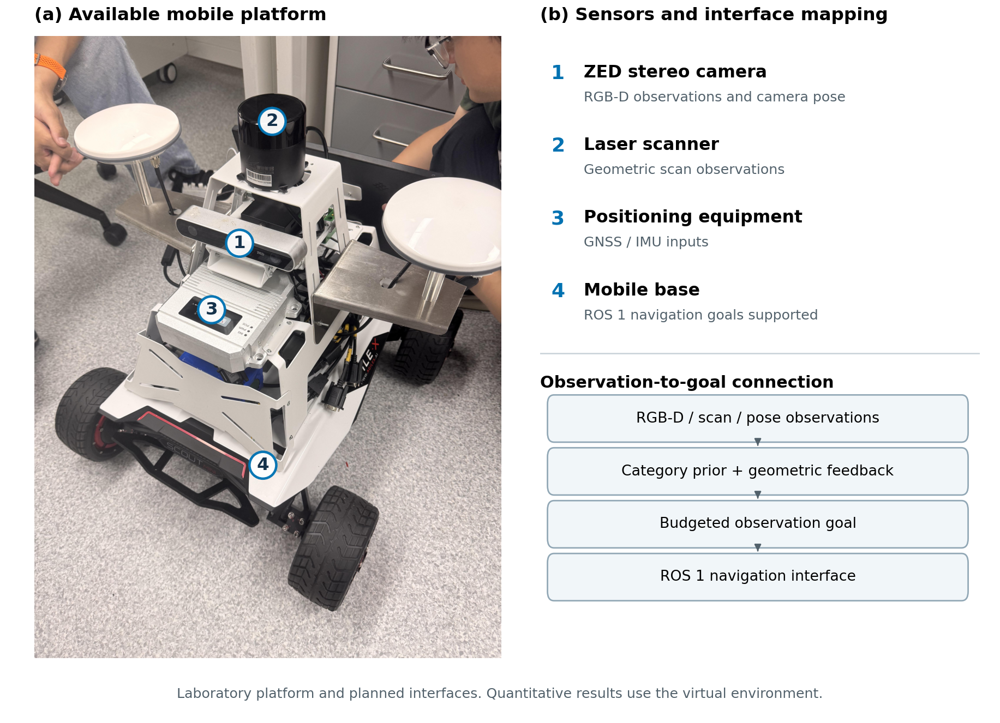
图2 实验室移动平台与本方法的接口对应。（a）用户提供的原始照片，数字标注对应双目相机、激光雷达、定位设备与移动底盘；（b）传感输入、观察决策与导航目标的连接示意。软件能力依据现有平台说明，照片不代表已完成实车性能实验。矢量PDF。
实验使用两个已参与设计的父布局P00、P01，每个布局含同一设施的两种候选构型 。两构型形成观察方向的歧义：在共同早期观测中，几何证据尚不足以明确哪一侧更值得优先访问，而公开类别与结构的关系能够提供方向线索。有限行动预算使错误选向后的探查和改向产生机会成本。场景抽取工业设施中设备目录可用、表面受遮挡和观察方向影响建档结果的任务特征，用于检验类别先验的用途。
。两构型形成观察方向的歧义：在共同早期观测中，几何证据尚不足以明确哪一侧更值得优先访问，而公开类别与结构的关系能够提供方向线索。有限行动预算使错误选向后的探查和改向产生机会成本。场景抽取工业设施中设备目录可用、表面受遮挡和观察方向影响建档结果的任务特征，用于检验类别先验的用途。
四个条件分别作为静态建图任务执行，既有地图不在任务之间传递。它们是工业设施观察问题的受控几何抽象，并非实际车间采样；布局变化用于说明再次建图的应用需求，当前实验不测量变化检测、跨时地图更新或动态避障性能。
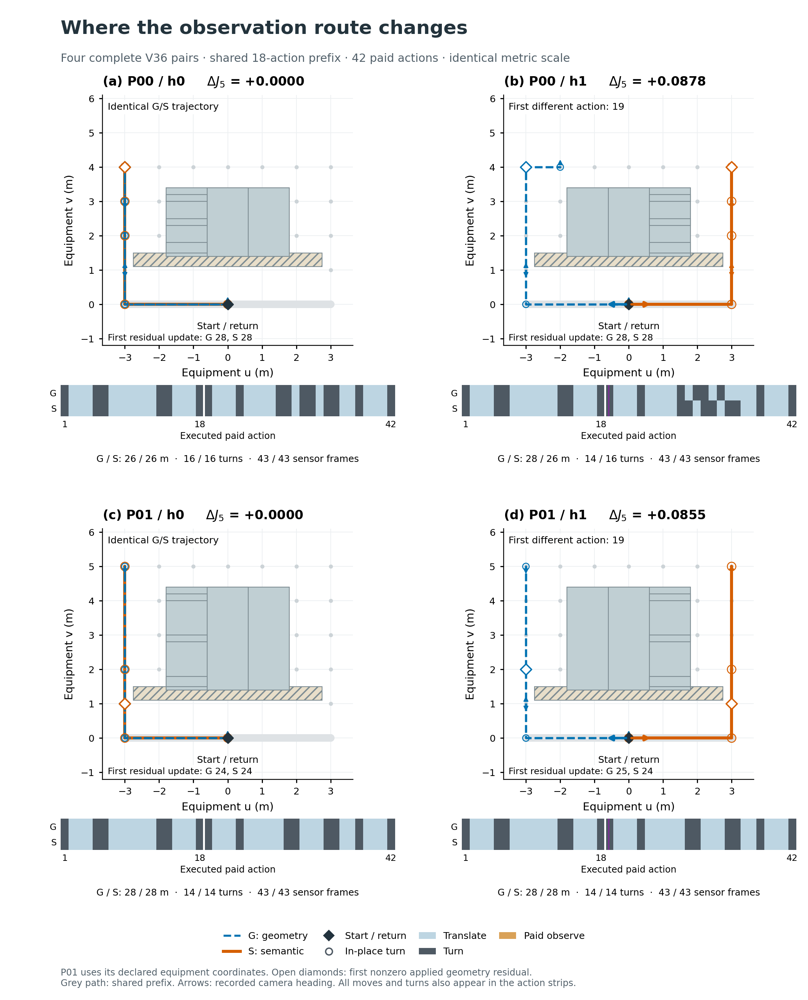
图3 四个确认条件的完整保存轨迹及逐动作带。各图采用同一米制尺度，P01按预定义设备坐标系旋转显示；灰线表示共同18动作前缀，蓝虚线G与橙实线S表示后续实际路径。实心菱形为共同起终点，圆环表示原地转向位置，箭头为抽样记录的相机朝向，空心菱形为首次非零实测几何残差更新。两个h0条件完全同轨迹，两个h1条件首次执行分歧均为第19步。动作带保留全部平移及转向，避免重合路径隐藏观察代价。背景完整几何仅用于离线解释。矢量PDF。
双方共享安全姿态图、设施坐标系、两种完整公开模板及其预测深度、扫描和潜在曝光。真实构型及未来实测不向控制器开放。共同前18步观测后，机器人恢复起始位置和朝向，随后滚动决策。固定前缀使首次自主决策前的信息可比，也意味着本实验不代表从动作0开始的未知环境探索。
内部基准G是共同主动几何规划，S是在同一规划器中加入类别先验。G仍能补看、诊断构型并重新选向；若禁止它补看，就会把主动能力差异误认为语义收益。G/S比较因而检验类别在共同几何能力之上的增量。确认批固定策略，采用预定留出噪声种子，运行两布局、两构型与两方法的8条主任务。两个父布局均已见，留出的是噪声实现，不是完全未见几何。
错误类别开发批另设X和Xnf：X交换类别解释且保留纠错；Xnf进一步同时关闭实测几何更新与未来纠错预期。外部机制比较使用SWAP-I和VISTA-I，分别参考SWAP[2]的巡检与VISTA[3]的视向覆盖思想，保持公共输入及重建后端。这些比较与G/S的类别开关实验分开解释。
设为公共评价域内从起点可达的安全格，终点地图为，未知格记为−1。二维覆盖率为

评价器采用0.2 m机器人半径确定安全格，P00、P01分母分别为588、668。已判占据也属于已知，因此该指标表示覆盖，不等于占据分类正确率。安全格真值集合仅用于离线评价，包括终点及本章声明的过程检查点，不构成额外在线输入。过程覆盖使用相同时刻的地图替代公式中的终点地图，评价分母不变。
三维表面评价同时计算距离阈值下的精确率和召回率。前者度量预测表面与参考的接近程度，后者度量参考表面被重建的完整程度。定义

采用乘积是为了同时约束覆盖和表面质量，但解释结果时仍分开报告两项；乘积提高不意味着两者都提高。主阈值5 cm及辅助阈值2、10 cm在实验前固定，空预测质量记零。预测网格按双模板公共包围盒外扩0.20 m裁剪，去除已知地面，不补洞或配准。精确率使用预测表面到完整参考的距离，召回率使用固定设施外竖面到预测的距离，各采样32768点。公共区域外错误不计入精确率，所以指标反映设施评价域的建档质量，并非全场景三维精度。
任务资格和质量单独判断。覆盖不足、碰撞、超预算或未返航都不能用较高抵消。均值变化按配对条件等权计算，以两组均值之差除以基准均值，不把重复回放计入分母。
确认实验8条任务均执行42个付费动作、零碰撞并精确返航，独立在线回放全部一致。表7保留全部四个条件，两个 为正增量，两个
为正增量，两个 持平。
持平。
表7 两个已见父布局的全部配对确认结果。
| 父布局／构型 | G的 |
S的 |
S−G |
|---|---|---|---|
| P00／ |
0.772200 | 0.772200 | 0 |
| P00／ |
0.672703 | 0.760456 | +0.087753 |
| P01／ |
0.727281 | 0.727281 | 0 |
| P01／ |
0.638118 | 0.723586 | +0.085468 |
| 等权均值 | 0.702576 | 0.745881 | +0.043305（+6.1638%） |
两方法平均覆盖均为0.952544，平均表面F1由0.737490提高至0.782951。因此，本组联合收益来自表面质量改善，不能写成覆盖率或定位精度提高6.1638%。P00、P01的表面召回分别由0.595795、0.555450提高至0.724945、0.684509，说明有效观察方向对减少表面缺失具有作用。
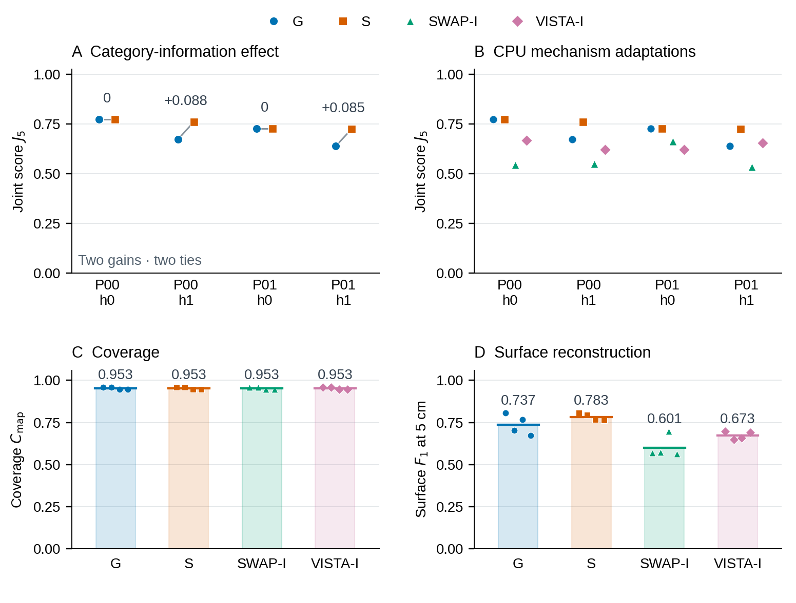
图4 全部四个条件的结果。（A）G/S联合指标配对；（B）共同CPU机制比较；（C、D）覆盖与表面F1分量。散点为条件，横线为均值，不表示置信区间；B复用A中的G/S，不增加独立证据。SWAP-I、VISTA-I不是原作者完整系统。矢量PDF。
行动记录进一步解释了增益来源。两个在共同前缀结束时具有相同非语义历史，S的构型权重为(0.1,0.9)，G为(0.5,0.5)。第19个动作S选择右转，G选择左转，随后取得不同的实测表面。两个中，G的固定同分选择恰好与S一致，因此轨迹和分数相同。这说明类别的价值是减少方向歧义，而不是观看某类设施就必然获得额外奖励。
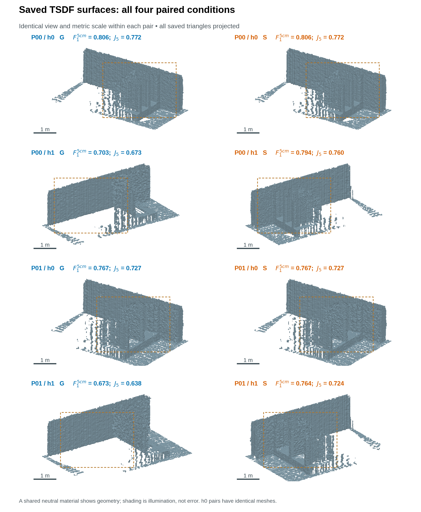
图5 全部四条件的实际终点TSDF公共评价域网格。每对G/S使用同一视角、尺度、材质和光照；h0从左后侧、h1从右后侧显示，标注取自冻结评分。全部保存三角面均参与绘制，无补洞、平滑或真值表面叠加；两个h0配对的网格数组完全相同。虚框对应图6，明暗不表示重建误差。矢量PDF。
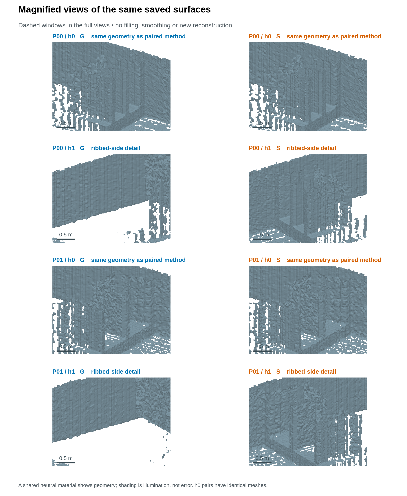
图6 图5虚框内的同投影局部放大。所有条件均采用3.40 m×2.55 m投影窗口，窗口位置由侧部结构范围确定。两个h1显示S补充的侧面观测，两个h0提供持平对照。该图直接放大保存网格的显示区域，不引入新的几何或局部质量指标。矢量PDF。
整体图与局部图回答了定量表格以外的问题：增益具体发生在哪些表面。h1中的差别主要位于受遮挡的侧部，和第19步的方向选择相对应；h0没有发生轨迹分歧，网格也相同。局部图用于解释已有全局指标，不能据此另报未经测量的局部精度提升。
图3同时显示二维路径和完整动作带，因为原地转向会改变相机观察方向，却不增加平移路程。根据保存的实际位姿逐段累加，P00/h0的G、S均平移26 m、转向16次；P00/h1分别平移28 m和26 m、转向14次和16次。P01两个构型的两方法均平移28 m、转向14次。本组前进1 m与原地转向90°各收费一次，因此八条任务均为42个付费动作、零剩余动作，并返回相同起始位置及朝向。S的正收益没有依靠更多付费动作或更长的路径。
每个平移或转向后均取得一次实际传感，加上免费初始帧，各任务共保存43帧。本组没有额外的observe原子动作，不应将其误读为未进行观测。图中的几何更新标记来自实际残差日志：P00两个构型的G/S首次非零更新均在第28步，P01/h0均在第24步，P01/h1的G、S分别在第25、24步。这些确认轨迹与第6节错误类别开发轨迹分开解释，不能把开发批的“第28步纠错、第29步改向”复制为所有任务的事件时间。
为检验终点差异如何形成，本轮在读取新测量前固定18、24、30、36、42五个检查点，对原确认批全部八条保存轨迹进行离线重融合。每条从免费初始帧开始按原顺序融合，保持原RGB-D、扫描、准确位姿、4 cm TSDF体素、12 cm截断和同一表面评价器；不调用World、规划器或新的传感查询，不改变执行路径。各条的五份预测网格先封存，再读取参考几何评价，共344次原传感包融合与40次表面评价。原18步和42步的16份地图、规范化网格几何及参考哈希全部一致；预先声明指标绝对容差为 ，实际最大差为0。
，实际最大差为0。
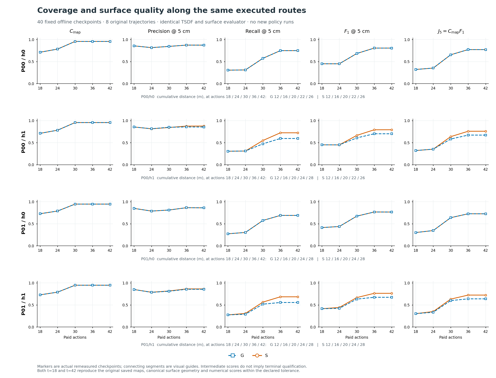
图7 全部四个配对条件的离线重建过程。五列分别为二维覆盖、5 cm表面精确率、召回率、F1和联合指标，横轴为已付费动作；每行下方给出同一检查点的真实累计平移距离。标记为实际重融合测量，连接线仅辅助阅读，不插值生成其他动作时刻的分数。两个h0持平条件完整保留。40个检查点来自八条旧轨迹，中间状态不作为合格终点或新增独立任务。矢量PDF。
在全部五个检查点，所有G/S配对的二维覆盖均相同，且到第30步检查点已达到各自终点覆盖值；后续联合指标变化因此来自表面质量。两个h0配对的精确率、召回率、F1和联合指标也始终相同。两个h1的三维分量逐步分开：P00/h1终点F1由0.702575提高至0.794224，P01/h1由0.673401提高至0.763595，对应的召回变化见本节主结果。该分解支持“观察方向改变表面采集”这一解释，不能把这些过程结果写成二维覆盖增长加速。
过程优势并非每一时刻都成立。P00/h1在第24步S的比G低0.000819，到第30、36、42步检查点才分别高0.054606、0.086714、0.087753；P01/h1在第24、30、36、42步分别高0.015759、0.033007、0.085503、0.085468。差值均先用未取整原值计算再显示六位小数。两检查点之间未测量，不能声称精确的收益开始动作；第36至42步的轻微回落也原样保留。18步虽已返回共同起点，但覆盖不足；中途地图还可能未返航，因此较高过程分数不等于任务已经成功完成。
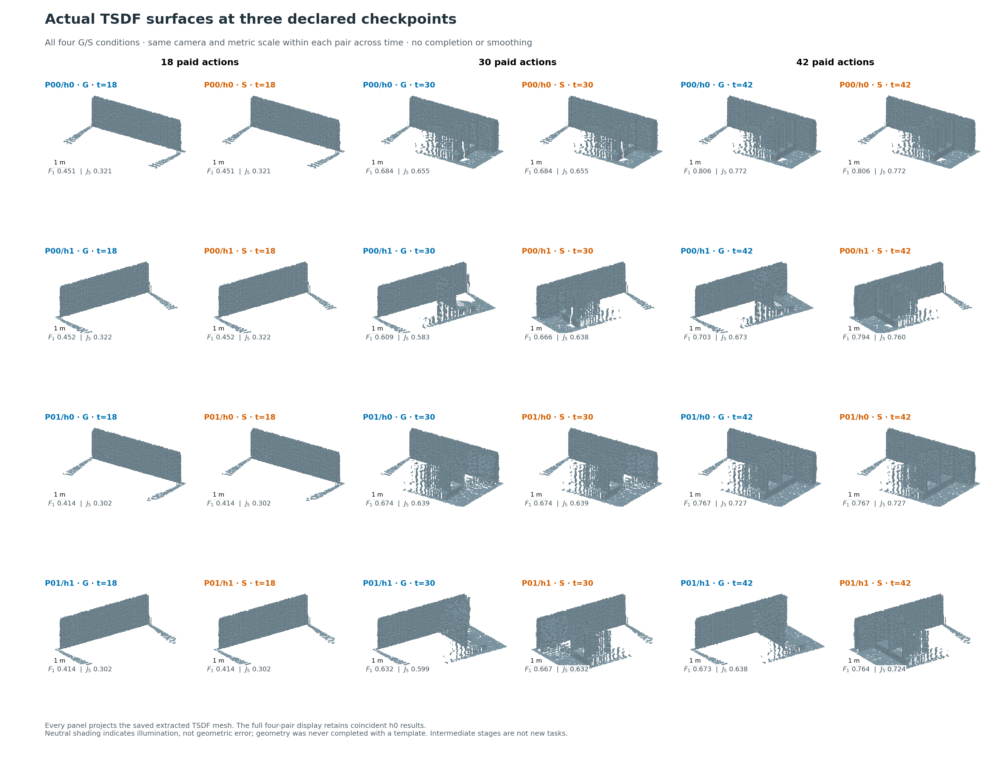
图8 固定18、30、42步的实际重融合TSDF网格，共四条件、每条件三个时刻的G/S配对。同一构型各方法和时刻采用同一相机、米制尺度、材质与光照；h0从左后侧、h1从右后侧显示。全部提取三角面参与绘制，无补洞、平滑、简化或模板补面；明暗表示光照，不表示误差。数值来自本轮离线测量，两个h0持平条件完整保留。矢量PDF。
阶段网格将路线选择与实测表面建立直接联系：共同前缀结束时网格一致，随后不同方向的观测改变侧部结构的重建完整度。全部终点评分与原记录完全一致，说明过程图延伸了已有轨迹的解释范围，并未另构造一组更优的终点结果。检查点不能增加独立布局数，也不替代未见场景的验证。
错误类别开发批在P00两构型上比较G、S、X、Xnf，全部任务满足相同预算及返航要求。完整结果见表8，该批噪声与确认批不同，均值不混合。
表8 错误类别开发批的四策略结果。Xnf同时关闭实际纠错与未来纠错预期。
| 策略 | 的 |
的 |
等权均值 |
|---|---|---|---|
| G：共同主动几何 | 0.772300 | 0.675211 | 0.723756 |
| S：正确类别与纠错 | 0.772300 | 0.770231 | 0.771266 |
| X：错误类别与纠错 | 0.669298 | 0.675211 | 0.672254 |
| Xnf：错误类别、关闭纠错 | 0.652727 | 0.657403 | 0.655065 |
X相对Xnf的平均联合指标提高2.6241%。两构型的错误先验都在第28步取得有效几何证据后，将真实构型权重由0.1修正至0.978178；下一步X前进，Xnf分别转向。另在首次纠正状态固定姿态、曝光、剩余预算和未来信息设置，仅将权重恢复为错误先验，下一动作随之变化。这支持实测纠错能够影响决策，但该干预未执行新的物理终点，不能把全部质量差归因于某一个动作。表8估计的是整套纠错政策，不是IGCR单一函数的纯消融。
确认批在2、5、10 cm下的相对均值收益依次为5.5040%、6.1638%、6.2110%，两个均持平、两个均为正。纠错开发批X/Xnf的对应平均收益为0.3952%、2.6241%、2.0902%，但在2 cm下的绝对差为−0.0021593573。更严格的表面距离阈值下，额外观测并不保证每个构型的综合表面F1都提高；平均完整度改善与每个阈值、每个构型都改善应作区分。
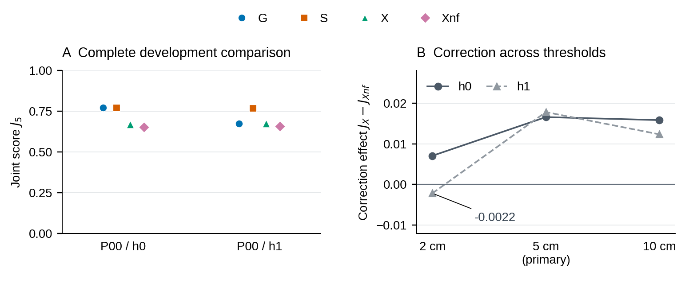
图9 P00两构型的完整纠错对照与阈值敏感性。左侧显示四策略终点，右侧显示X相对Xnf在2、5、10 cm下的差值，保留严格阈值的负例。该开发批与图4确认批分别报告；Xnf不属于单一函数消融。矢量PDF。
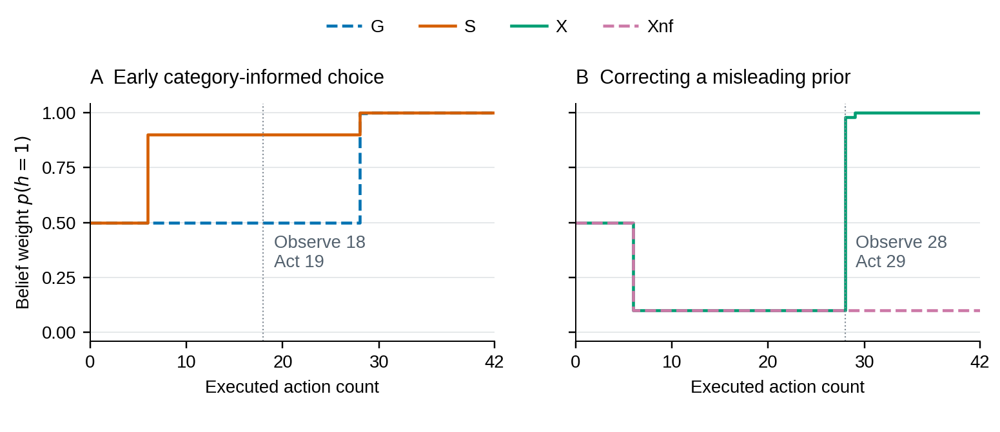
图10 保存的P00／h1开发轨迹中的信念与行动联系。（a）类别线索在共同前缀内形成，观测18之后选择第19个动作；（b）观测28修正错误先验，随后选择第29个动作。横轴表示已执行动作数，曲线是观测后的构型权重；图示不增加独立终点样本。矢量PDF。
图10与方法章的双构型数值例子相互对应：类别先改变尚有歧义时的方向判断，几何残差再检验该判断是否得到当前测量支持。两种更新通过下一步动作影响后续表面采集，而不是直接向重建模型补入模板几何。
共同CPU比较共16条主任务，即四种方法各运行四个条件，均满足资格要求。G/S结果与确认批逐条件一致，仍视为同一组证据。表9列出实际表面质量与规划开销。
表9 共同CPU机制比较的四条件均值。时间仅包含每任务规划与账本，不包含传感、TSDF及终点评价。
| 方法 | 平均覆盖 | F1@5 cm | |
规划与账本时间（s） |
|---|---|---|---|---|
| G | 0.952544 | 0.737490 | 0.702576 | 0.067853 |
| S | 0.952544 | 0.782951 | 0.745881 | 0.123555 |
| SWAP-I | 0.952544 | 0.600887 | 0.572223 | 1.256934 |
| VISTA-I | 0.952544 | 0.672911 | 0.640977 | 1.388679 |
在当前任务中，S平均联合指标高于两种机制适配，表明观察分配方式能够影响相同预算下的设施质量。两个外部适配的语义项均在96次自主决策中实际激活；同状态移除语义项后，首动作分别在9次、12次发生改变，因而不是全零语义占位对照。然而，这些排序诊断没有另执行去语义轨迹，且适配同时改变目标函数与规划细节，不能据此声称击败完整SWAP或VISTA系统。
所记录的CPU开销说明有限图上的实现能够运行，不代表大规模环境下的效率结论，也不是机器人端到端响应时间。原生TARE[5]另完成4条规划器迁移任务，但相机视场转换、路点投影、付费等待及返航受适配器影响，作为工程接入证据单独保存，不纳入表9的公平性能排名。
为检验原收益对预算和几何设置的依赖，本轮保持原控制器、类别先验、共同18步前缀及评价规则，预先列出128项新任务。原P00/P01、两构型、30/42/54步、两种子和G/S/X/Xnf构成96项；另在42步下对两个结构变体、两构型、两种子及四策略执行32项。种子固定为2026092801、2026092802，原确认结果与新结果分别报告。
两个变体分别改变可见侧部结构：P00将一块肋板沿局部y方向平移0.25 m；P01将三块侧肋的上边界由1.80 m降至1.35 m。每项改变同时作用于该布局的两候选构型，公共模板、实际传感几何和评价参考使用相同变换，安全图与共同前缀保持不变。它们用于检验同一设施族内的结构扰动，不能替代未见自然设备的泛化测试。每几何的两种噪声重复也不增加独立布局数。
128项任务全部按预定条件执行一次，96项完成并合格，32项记录为预算可行性失败，无重试或条件替换。所有合格任务均零碰撞、精确返航；完整状态长表保留全部128项，而质量均值只在整组声明任务均合格时报告。
原两布局的30步条件共32项，控制器均在18步前缀后无法找到同时满足双模板80%预测覆盖门和精确返航的计划。其观测、部分轨迹及失败原因全部保留，失败时刻的地图由已存19帧另行融合与评价，资格仍为失败。这是当前规划约束下的可行性边界，不表示物理场景在任意算法下都无法完成。表10的成功终点均值不对这组填零，也不把失败部分地图当作完成任务。
表10 新批次预算与几何条件的完整策略均值。括号为全部四策略的合格/声明任务数；每策略在一行内对应8项任务。
| 条件（合格/声明） | G的J5 | S的J5 | X的J5 | Xnf的J5 | S/G变化 |
|---|---|---|---|---|---|
| 原布局30步（0/32） | — | — | — | — | 不可比较 |
| 原布局42步（32/32） | 0.702648 | 0.746567 | 0.652539 | 0.641425 | +6.2505% |
| 原布局54步（32/32） | 0.926298 | 0.919819 | 0.931050 | 0.908197 | −0.6995% |
| 两变体42步（32/32） | 0.704562 | 0.734357 | 0.664307 | 0.653192 | +4.2289% |
42步下，G/S的平均覆盖同为0.952544，新噪声重复的平均类别收益为6.2505%，与原确认批6.1638%的方向及量级一致。54步下，两者覆盖均达到1.0，G/S的表面召回分别为0.985764和0.983826，精确率分别为0.873764和0.863789，联合指标转为S低0.6995%。该分解显示负差主要伴随精确率降低；它与“模板曝光代理未完全表达实测TSDF质量”相符，但没有独立证明某种融合误差是唯一原因。
因此，额外预算提高了两种方法的绝对建档质量，却没有保持类别方法的相对优势。54步下X还取得高于G/S的均值，说明当前有限前瞻和曝光代理没有保证正确类别策略在任意预算下都最优。论文支持的结论应是：在当前42步约束下，类别线索帮助提前分配有效观察；预算充裕时，需要进一步改善预测价值与实际表面质量的对应。
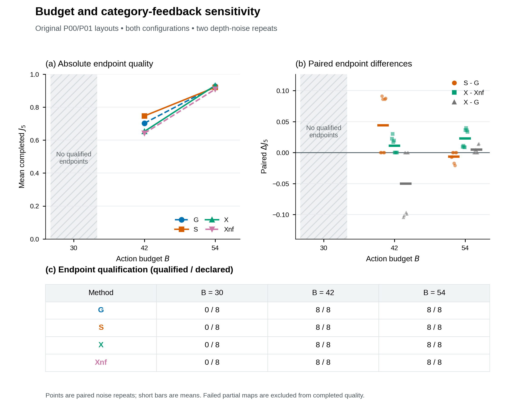
图11 原两布局96项扩展任务的预算结果。显示四策略均值、完整配对差与合格/声明任务数；30步的失败部分地图不作为完成性能，均值留空。点为布局、构型和噪声配对，横线为均值，不表示独立场景置信区间。负值与持平条件全部保留。矢量PDF。
原两布局42步下，X相对Xnf的平均增量为1.7328%；54步下为2.5163%。这些数值仍对应整体纠错政策。42步时P00的配对均有改善，而P01配对持平，不能把单布局的纠错收益解释为所有设施中的恒定优势。距离阈值和同族变体的完整分组与原始配对同时保存，以检查均值背后是否存在持平及反向条件。
肋板位移和肋板降低两个变体的S/G平均收益分别为5.0337%和3.3974%，合并为4.2289%。每变体均为两项正增量与两项持平，对应h1的两个噪声重复及h0的两个重复；原布局42步也为四胜四平。相比之下，原布局54步为四平四负。正确类别的中预算收益在同族结构变化后保持，但并未变为所有预算、所有构型的普遍增益。
2/5/10 cm下，原布局42步S/G的均值相对差为5.4991%/6.2505%/6.3063%，变体为3.6126%/4.2289%/4.3803%；54步原布局为−1.2217%/−0.6995%/−0.2866%。因此，该预算边界不依赖仅选择5 cm阈值。图12保留42步的全部场景配对及三阈值分组；原始长表另给出精确率、召回率、F1和覆盖分量。
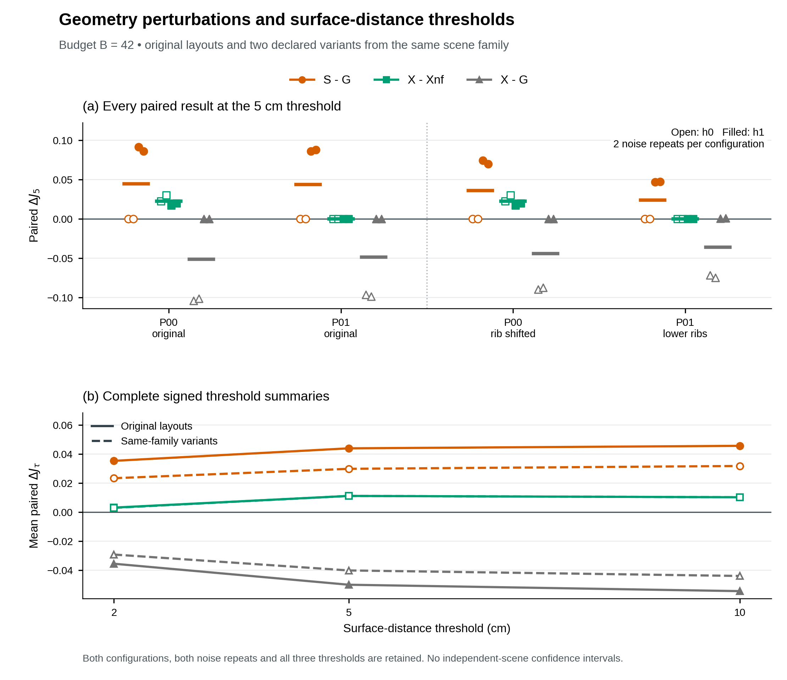
图12 42步下原布局和同族结构变体的完整配对差及2/5/10 cm敏感性。类别、整体纠错和错误类别三个对比均按相同场景、构型、种子配对；小点显示重复条件，均值不附独立场景置信区间。两个变体属于已声明设施族内的几何扰动。矢量PDF。
本章的有效条件是：类别与结构关系有用，当前几何仍存在方向歧义，且预算使错误选向产生代价。实验依赖公开双模板、安全图、人工类别、准确位姿和共同前缀，几何范围为两个已见父布局及两个同族变体，不作统计显著性或未知大场景泛化结论。实际价值是用明确的任务条件说明语义如何参与观察分配，而不是把模块名称、接口调用或更复杂结构本身作为有效性证据。
较早的六父共享可靠性分支（区别于第10节新三布局开发）在另一套 任务与控制器下，正常关系组六父S/G为五平一负，均值相对差−0.3301%；关系失配组中，S与固定关系可靠度的普通贝叶斯语义策略B在六父上全部持平，完整开发矩阵仍有缺项。这些结果不并入本章表格，也不支持新增机制已取得性能收益。它们说明当前正结论应限定在已验证的实现与任务条件，四模块的逐项增量及更大场景中的整体优势仍需进一步检验。
任务与控制器下，正常关系组六父S/G为五平一负，均值相对差−0.3301%；关系失配组中，S与固定关系可靠度的普通贝叶斯语义策略B在六父上全部持平，完整开发矩阵仍有缺项。这些结果不并入本章表格，也不支持新增机制已取得性能收益。它们说明当前正结论应限定在已验证的实现与任务条件，四模块的逐项增量及更大场景中的整体优势仍需进一步检验。
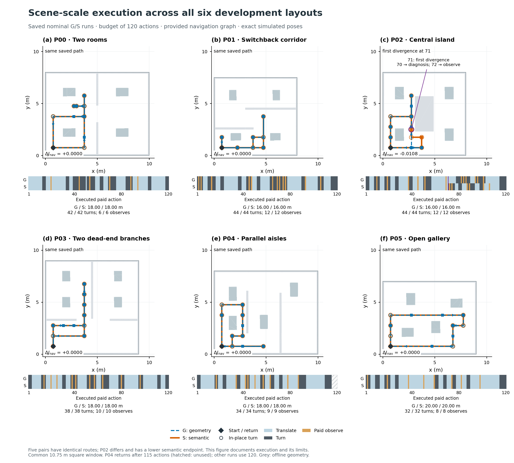
图13 已复核六父正常关系开发组的全部G/S保存轨迹。各图使用同一10.75 m见方坐标窗口，背景几何只作离线解释；共同条件包含公开安全导航图与准确模拟位姿。任务预算均为120动作，P04两方法实际115动作返航、剩余5动作，其余使用120动作；斜线带为未使用预算。圆环为原地转向，方点为额外付费observe位置，动作带保留全部已执行动作。五对完全同轨迹；P02在观测70后选择诊断，第71步转向首次执行分歧，第72步执行observe，该条件S终点低于G。该图展示场景级执行与已知边界，不作为六场景语义优势的证据。矢量PDF。
六父实际平移距离为16–20 m，G/S在各配对中相同，转向数和额外observe数也逐配对相同；路径或动作顺序仍可不同，如P02。该分支原子转向为30°，与本章局部实验的90°不同，且和评价定义不同，不能混合动作成本或质量均值。这些保存记录回答“系统是否在场景中实际运动和观察”，性能表则回答“类别是否在该任务条件下有增量”，二者分开说明。
为从局部方向选择扩展到工作区内的观察分配，另建立通道型AISLE、工作单元型CELL和环路型LOOP三个开发布局。各布局包含四个设施和两组重复类别，控制器使用实测实例支持及四种结构假设。G、B、S和NBV共享传感、几何前端、名义模板族、安全图、TSDF与动作预算；G/B/S均保留付费诊断能力，S/B用于检验同类实例共享。每种方法按共同噪声种子92801运行一次，预算160动作，总计12条开发记录。该组不是未见布局测试，也不增加原双构型确认实验的样本数。
场景级前进0.25 m、转向30°和显式观察各收费一次，每个原子动作均取得RGB-D和扫描，另有一个共同起点帧。与第4节不同，可导航覆盖分母是固定0.1 m栅格上、考虑0.2 m机器人半径的起点连通保守自由域，分子仅计实际测为空闲的单元。四个设施的5 cm表面F1先分别计算，再等权平均：

未发现设施仍保留在分母中。表面评价读取完整预测网格和预先固定的可观测参考，不使用预测类别、语义重要性或有利区域裁剪；正确背景面与参考域外的正确目标面单独记录，错误预测面积按最近设施分配。面积采样间距为0.3 m，距离容差为5 cm。宏平均精确率、召回率、F1分别列出，宏平均F1不是表中宏平均P/R的再次调和平均。任务资格要求合法停止、无碰撞、预算内回到起始XY及朝向，并且传感取得、保存与融合一致；不要求先看全四设施。新与旧的覆盖和表面定义不同，不能合并均值。
原执行与评价流程共11条合格、1条评价失败，完整结果如下。CELL/G在160动作后已无碰撞返回起始位置和朝向，但原评价器拒绝了一个面积为 的有限三角面。因此，该项保留原评价失败状态，不能以零分代替，也不能把它解释成导航未完成。
的有限三角面。因此，该项保留原评价失败状态，不能以零分代替，也不能把它解释成导航未完成。
表11 场景级开发组全部原始质量终点。 C为覆盖率，J为联合分数；P、R和F1为四设施宏平均；“—”表示原评价不可用。
| 布局/方法 | C | P | R | F1 | J |
|---|---|---|---|---|---|
| AISLE/NBV | 0.999289 | 0.921930 | 0.819272 | 0.857363 | 0.856753 |
| AISLE/G | 0.999289 | 0.921930 | 0.819272 | 0.857363 | 0.856753 |
| AISLE/B | 0.999289 | 0.921930 | 0.819272 | 0.857363 | 0.856753 |
| AISLE/S | 0.999289 | 0.921930 | 0.819272 | 0.857363 | 0.856753 |
| CELL/NBV | 0.936450 | 0.905423 | 0.676320 | 0.736336 | 0.689542 |
| CELL/G | — | — | — | — | — |
| CELL/B | 0.936450 | 0.962245 | 0.756044 | 0.818539 | 0.766521 |
| CELL/S | 0.936450 | 0.962245 | 0.756044 | 0.818539 | 0.766521 |
| LOOP/NBV | 0.956304 | 0.910251 | 0.565148 | 0.648956 | 0.620599 |
| LOOP/G | 0.956304 | 0.910251 | 0.565148 | 0.648956 | 0.620599 |
| LOOP/B | 0.956304 | 0.910251 | 0.565148 | 0.648956 | 0.620599 |
| LOOP/S | 0.956304 | 0.910251 | 0.565148 | 0.648956 | 0.620599 |
表12 场景级开发组全部原始执行成本与状态。 带*的CELL/G动作与路程来自独立运动完成核验，不把该项恢复为原流程合格。
| 布局/方法 | 动作 | 路程/m | 转向 | 额外观察 | 原流程状态 |
|---|---|---|---|---|---|
| AISLE/NBV | 160 | 24.0 | 54 | 10 | 合格 |
| AISLE/G | 160 | 24.0 | 54 | 10 | 合格 |
| AISLE/B | 160 | 24.0 | 54 | 10 | 合格 |
| AISLE/S | 160 | 24.0 | 54 | 10 | 合格 |
| CELL/NBV | 160 | 24.0 | 56 | 8 | 合格 |
| CELL/G | 160* | 22.0* | 58* | 14* | 评价失败 |
| CELL/B | 158 | 22.0 | 56 | 14 | 合格 |
| CELL/S | 158 | 22.0 | 56 | 14 | 合格 |
| LOOP/NBV | 160 | 20.0 | 62 | 18 | 合格 |
| LOOP/G | 160 | 20.0 | 62 | 18 | 合格 |
| LOOP/B | 160 | 20.0 | 62 | 18 | 合格 |
| LOOP/S | 160 | 20.0 | 62 | 18 | 合格 |
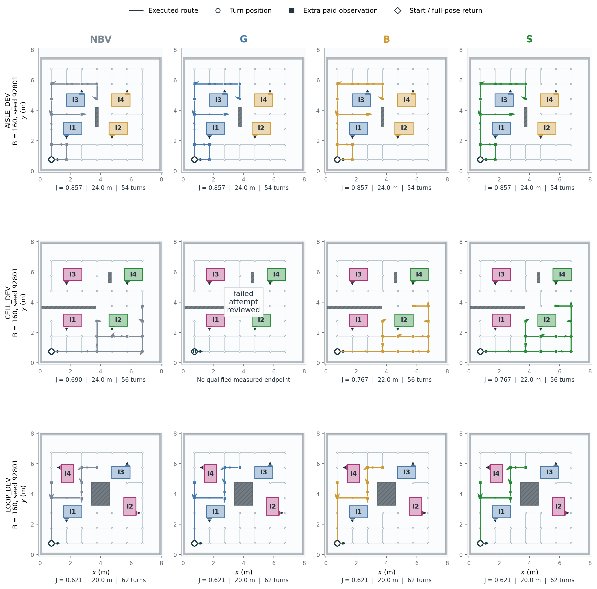
图14 三种开发布局与四方法的全部声明条件，统一米制尺度。圆环表示原地转向位置，方形表示额外付费观察，箭头按固定步间隔显示保存朝向；设备真值轮廓仅用于离线解释。CELL/G面板留空表示原评价失败，该条实际保存路径已经完成无碰撞返航，不能从空白推断没有行驶。矢量PDF。
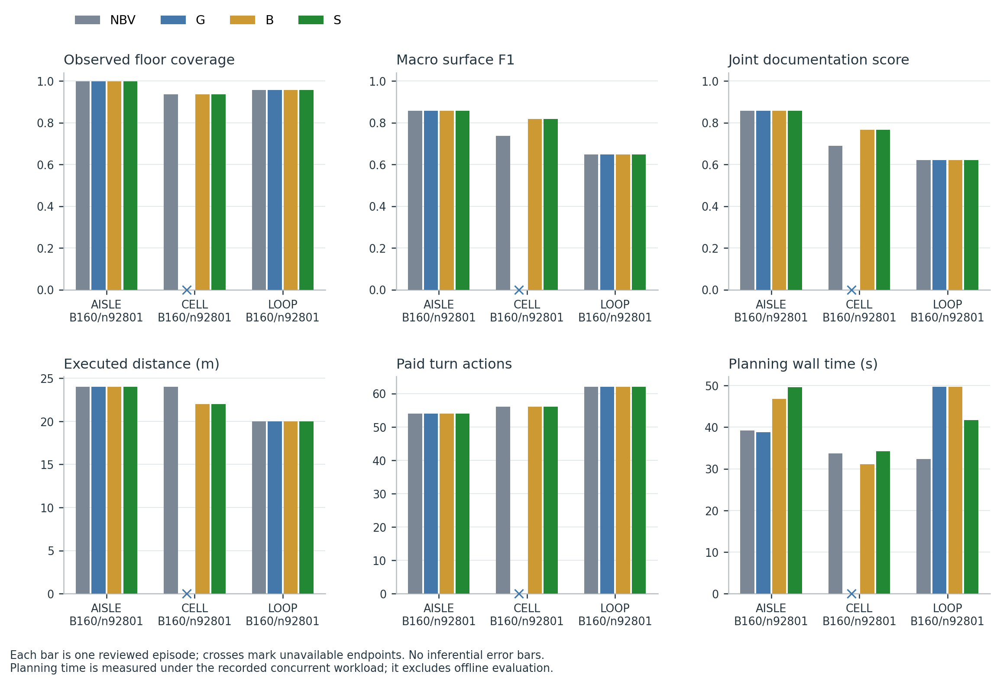
图15 原流程合格终点的覆盖、全实例宏平均F1、联合分数及实际成本。每根柱对应一条任务，无推断性误差条；叉号表示该快照未纳入的原评价失败项，不表示零质量或零路程。规划耗时排除离线表面评价，受到当时并发负载影响，不据此进行严格硬件归一化速度排名。矢量PDF。
AISLE的G、B、S、NBV动作、完整姿态序列及网格顶点和三角面数组完全相同：均平移24 m、转向54次、额外观察10次，160个付费动作取得161帧。LOOP四方法质量同样持平，均平移20 m。CELL的B与S均使用158动作、22 m，最终保留2动作返航余量，其余合格任务使用160动作。三种布局中S/B全部持平，不能据此宣称共享机制取得场景级优势；CELL的B/S高于NBV也混合了类别条件与诊断规划差异，不能直接解释为单一语义效应。
为使CELL/G完整保存的预测可进入共同质量比较，另行对全部12个预测应用同一数值兼容规则：仅移除面积不大于 的三角面，其余顶点、面顺序和参考保持不变，不进行ROI裁剪。11条未移除面，预测、参考、参数与覆盖一致后复用原测量；只有CELL/G移除一个面并进行一次新的派生表面测量。该过程没有新增World、轨迹或TSDF重建，原失败记录和原网格均保留。
的三角面，其余顶点、面顺序和参考保持不变，不进行ROI裁剪。11条未移除面，预测、参考、参数与覆盖一致后复用原测量；只有CELL/G移除一个面并进行一次新的派生表面测量。该过程没有新增World、轨迹或TSDF重建，原失败记录和原网格均保留。
补测得到CELL/G覆盖0.936450、P为0.960540、R为0.755442、F1为0.817264、联合分数0.765328。CELL的B/S联合分数为0.766521，相对这一G结果只高0.001193，约0.156%；AISLE与LOOP的G/B/S持平，三个布局的S/B均持平。统一测量因此补齐的是工程评价缺口，没有形成明显的跨实例语义优势。删除面可能改变后续表面采样序列，所以该项标为共同版本下的派生测量，不宣称与原先未成功运行的分数相等，也不把运动完成、原流程成功及派生质量可用混为一类。
AISLE中首个有信息的合格同类实例到第136步才进入共享，而原策略已在第126步进入返航阶段。对保存观测的分析发现，地面连通支持使相邻设施的归属容易出现歧义，进而推迟了类别与几何证据的资格。为分离前端影响，固定原有161帧及同一路径，回放原关联前端与方法章第8.4节的共同地面修正。原前端回放与保存证据完全一致；修正仅影响对象关联候选，不裁剪TSDF或评价输入。
表13 同一AISLE保存路径上的信息到达时机。 步数是原任务已付费动作数；第126步仅表示原路径返航分界。实例×帧记录不是独立实验样本或真值匹配错误率。
| 项目 | 原前端 | 共同地面修正 |
|---|---|---|
| 首次可靠标签平面 | 11 | 8 |
| 首次实际应用几何反馈 | 85 | 8 |
| 首个有信息同类实例／首次S−B后验差异 | 136 | 82 |
| 关联不确定实例×帧 | 278 | 3 |
| 全路径实际反馈次数 | 21 | 18 |
| 原返航前实际反馈次数 | 15 | 15 |
| 第二个cabinet首次自身反馈 | 85 | 87 |
修正使部分信息提前进入可用状态，但并非所有对象都更早，也不是反馈总量增加。134/161帧通过地面支撑检查，其余27帧保留原始关联输入；第二个cabinet的自身反馈反而延后两步。固定路径回放没有重新选择动作或生成新重建，因此只支持“实例关联影响信息资格与时序”这一机制解释，不能据此断言路径更短、F1更高或S优于B。新共同前端内的闭环比较须独立检验这些结论；48项主矩阵仍是满足开发条件后执行的计划，不在本章预填结果。
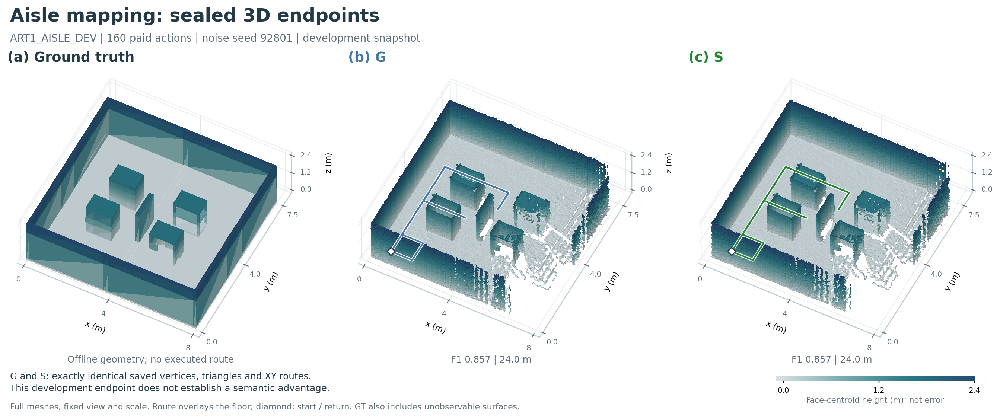
图16 AISLE完整真值与保存的G、S终点TSDF，共享正交视角、世界范围及米制尺度。每份预测的全部205,566个三角面参与显示，无抽稀、补洞或模板补面；XY路线投影到地面并覆盖遮挡显示，菱形表示起点与返航位置。颜色表示三角面中心高度和几何光照，不表示误差。G/S网格及路径相同。GT包含不可观测表面，而指标使用固定可观测参考。矢量PDF。
图16说明，可导航区域覆盖0.999289不等于所有设备表面完整。四设施宏平均F1为0.857363，逐设施召回分别为1.000000、0.557492、0.887814、0.831784，其中第二个设施仍有明显缺失。GT图中不可观测顶面等也会形成视觉缺口，但不属于本次固定可观测参考，不能按图中全部缺口直接反推召回。该展示把实际路径、遮挡与最终网格联系起来，同时保留G/S完全相同这一结果。
在相同三类开发布局、160动作预算及92801噪声实现下，另外执行12条共同地面关联修正任务。四方法使用相同前端，12条均无碰撞、恢复起点位置及朝向，并完成统一数值评价。原版本与修正版的全部24条记录均保留；原CELL/G的评价失败仍不改写为原流程成功。
表14 共同关联修正前后的联合指标。 单元格为原版本→地面修正版；†为原评价失败后的共同派生测量。
| 布局 | NBV | G | B | S |
|---|---|---|---|---|
| AISLE | 0.856753→0.652828 | 0.856753→0.652828 | 0.856753→0.652828 | 0.856753→0.652828 |
| CELL | 0.689542→0.465491 | 0.765328†→0.533627 | 0.766521→0.531167 | 0.766521→0.531167 |
| LOOP | 0.620599→0.730488 | 0.620599→0.730488 | 0.620599→0.730488 | 0.620599→0.730488 |
修正版在LOOP提高联合指标0.109889，约17.71%，而在AISLE和CELL下降。AISLE的首次实际动作分歧发生在第6步：修正版走22 m、转向56次、额外观察16次，原版为24 m、54次、10次；修正版覆盖与F1均下降。LOOP两版平移长度同为20 m，观察与转向分配改变后，两项指标反而提高。因此，实例资格改善、路径更短和建图更好是三个不同命题，不能用其中一个替代另一个。
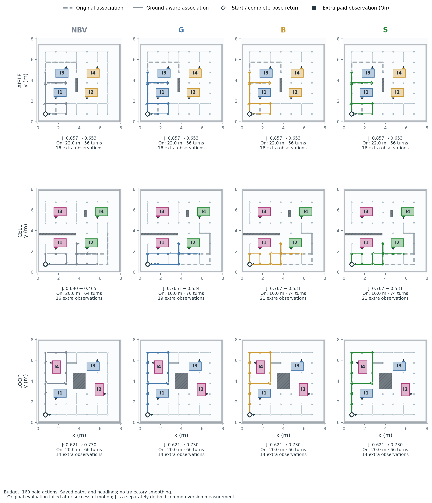
图17 全部12组闭环配对路径。灰虚线为原对象关联，彩实线为共同地面关联修正；两者均融合完整实测深度。全部布局按统一米制尺度显示，起终点、保存朝向及显式观察位置来自实际日志。CELL/G原运动完成，标注†的质量来自单独共同补测。PDF。
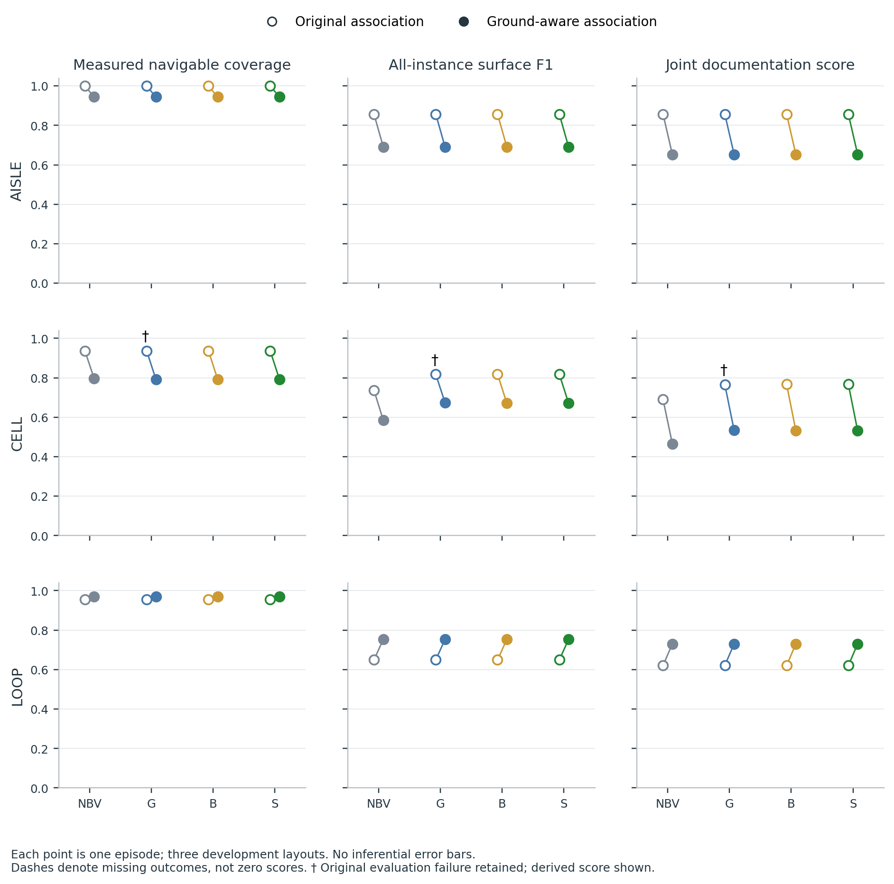
图18 统一指标下的覆盖、全部四实例宏平均F1及联合分数。空心为原版本，实心为共同地面修正版。每点一条任务，三布局为描述性比较单元，不以方法数或帧数增加独立样本数。原CELL/G评价失败与其派生测量同时注明。PDF。
两版各自的三个S/B配对均具有完全相同的实际动作和端点质量。地面修正版在CELL有23个实例—步记录的S/B后验不同，在LOOP有93个，但对应候选分数和行动均未改变。原开发及首批AISLE修正数据上的138个含类别直接候选池，在当前单同伴可达范围及乐观同伴资格下，也未能跨越直接目标排序边界。这是固定候选与自身证据下的解析机制检查，不覆盖诊断分支、新候选及未来轨迹，也不能把138个池当成独立实验。
AISLE重复补看记录还表明，多尺度名义模板可能在已有视锥中持续领取新增面积：实际支持覆盖中心尺度后，缩放模板仍可能离支持点较远。方法章第8.5节的历史曝光去重因此另设版本检验；它排除曾尝试的名义机会，不把排除项写成已重建表面。该版本不追溯替换表14数据，实际闭环结果须另列。地面前端、曝光代理与共享可靠性的作用应分开解释。
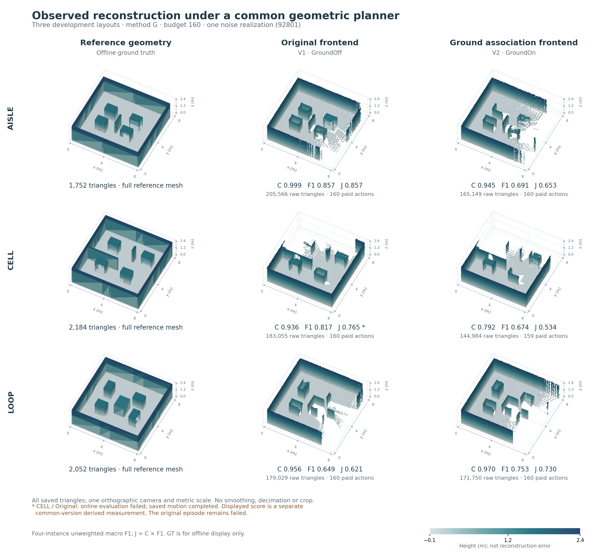
图19 固定几何方法G的三类场景、参考几何及两版完整TSDF。九幅共享正交相机、米制尺度及高度配色，保留全部1,055,521个原始三角面，无补洞、平滑、抽稀或选择性区域裁剪；颜色不表示误差。CELL原G保留原评价失败身份，图中指标来自单独共同补测。整帧融合可以重建尚未被语义前端登记的实例表面，所以登记数量不能替代实际几何完整性。PDF。
最后一轮12条定向消融保留共同地面前端，按方法章第8.5节去除同光心下已经尝试过的名义表面机会。三个开发布局、160动作预算、92801噪声实现和四方法不变。12条均完成无碰撞、起始XY及朝向恢复，并通过独立复核。原始、地面修正与曝光去重三个版本共36次尝试，仍只有三个开发实例；原CELL/G评价失败及其派生补测继续分别保留。
表15 地面修正版→曝光去重版的联合指标。 每个单元格为两条已核验任务的端点结果，未合并不同版本均值。
| 布局 | NBV | G | B | S |
|---|---|---|---|---|
| AISLE | 0.652828→0.782938 | 0.652828→0.782938 | 0.652828→0.734222 | 0.652828→0.734222 |
| CELL | 0.465491→0.515457 | 0.533627→0.786500 | 0.531167→0.786500 | 0.531167→0.786500 |
| LOOP | 0.730488→0.736447 | 0.730488→0.736447 | 0.730488→0.690253 | 0.730488→0.690253 |
曝光去重使AISLE和CELL全部方法的联合指标提高；LOOP的G/NBV小幅提高，B/S却降低0.040235。AISLE即使提高后，仍低于最初版本的0.856753。这说明修复重复名义面积计奖可以改变预算分配，但不能保证实测质量单调改善。它也不把曝光排除面积写成实际补全表面：本轮所有TSDF仍只融合实际深度。
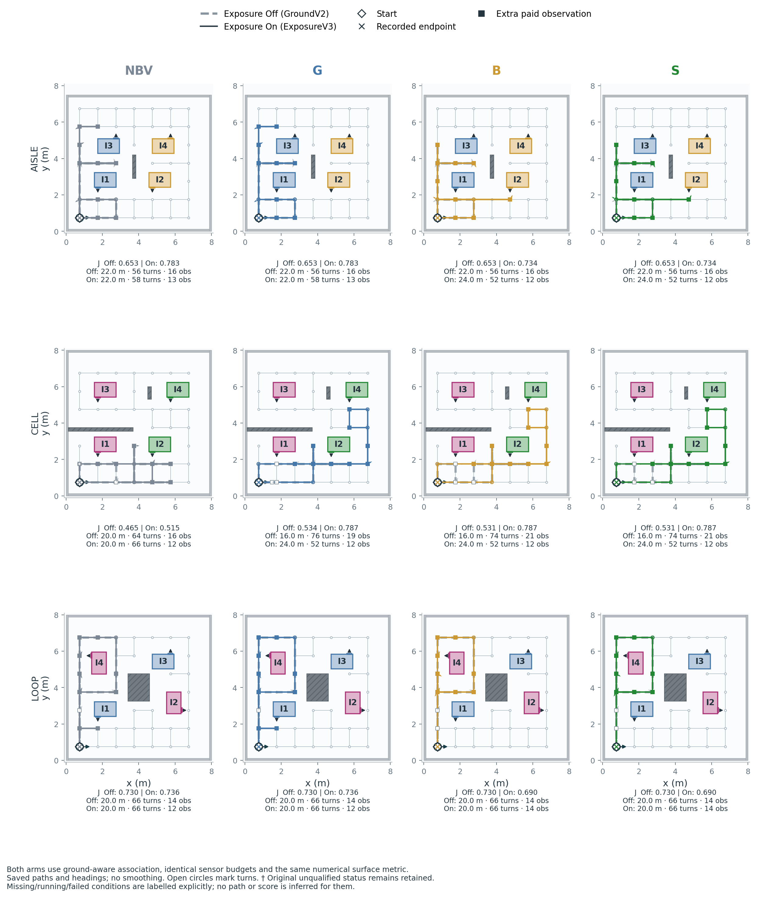
图20 三布局四方法的完整配对路线。两臂均采用共同地面前端，区别为历史名义曝光是否去重；图中全部路径包含返航，同尺度显示起终点、转向、额外观察与保存朝向。设备轮廓仅用于离线解释。PDF。
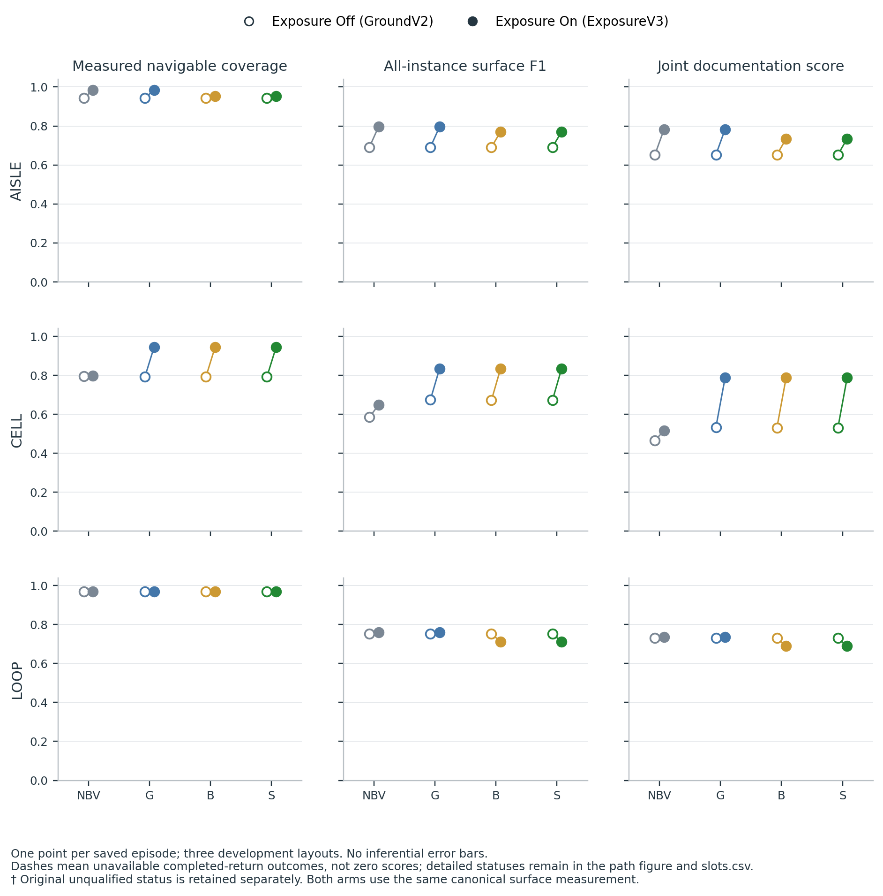
图21 全部配对的可导航覆盖、四设施宏平均F1和联合指标。每点对应一个实际端点，不能将方法、帧或实例—步记录当作独立布局；保留所有正差、负差和持平。PDF。
本轮S/B在三个布局的完整161帧实际传感序列与动作都相同，最终质量相同。AISLE没有实际可用同类同伴导致的后验差异；CELL的共享后验从第73步起不同，第100步候选分数也开始不同，却没有改变最终执行；LOOP后验从第65步不同，候选分数仍相同。这将“没有足够共享信息”“有后验差异”“有评分差异但无行动差异”区分开来。不能把其中任何一个直接写成语义收益。
AISLE的B/G比较进一步给出类别实际影响行动的反例。两者从初始帧到第31帧的完整实测输入相同，几何证据也相同；第27步类别先验改变了直接目标排序。第32个实际动作首次分歧：B向右转，G向左转。两臂选中目标分别在第41、44步完成真实付费观察，预算和执行守卫均通过。但B的最终联合指标比G低0.048716。因此，这里证明类别信息进入了闭环决策，同时证明“改变行动”不等于“提高质量”。
CELL的G/NBV则检验未来诊断分支。两者前20帧实测输入相同；第17步所有32个直接候选分数相同，G另外具有7个诊断候选。其选中候选分数0.082740包含预期信息增量0.006106，高于直接候选0.078458。第20个动作G原地观察而NBV转向，两条宏动作分别于第20、29步完成且未取消。G的该次诊断没有应用新几何反馈，构型后验仍均匀，也没有新增二维已知格；最终G的联合指标仍高出NBV 0.271044。该结果支持此布局中诊断分支改变完整后续路线的作用，不能归因于该帧已兑现信息收益，也不能作为两个含语义方法S/B的共享增益。
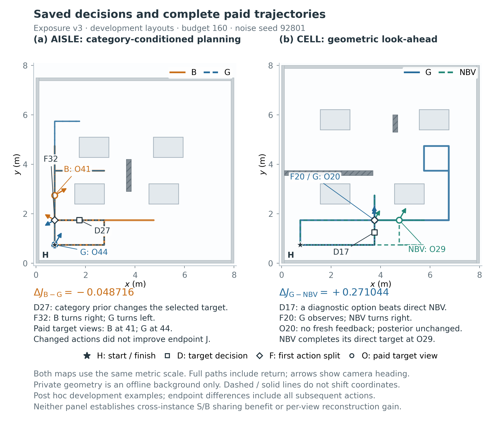
图22 AISLE类别条件B/G和CELL几何前瞻G/NBV的完整保存路径。D、F、O分别表示目标决策、首次实际动作分歧、付费目标观察完成；两图共享米制尺度，箭头为记录朝向。端点差包含后续全部动作，不是单次观察的质量贡献。PDF。
根据执行前声明的启动条件，至少需要一个S/B在共同实际输入前缀中的共享信息—可执行目标—实际动作分歧链，才开启六个保留布局的48条主比较。当前三个版本、九个S/B配对均无实际动作分歧，该必要条件没有满足，故本轮不执行主矩阵，不再追加第四轮开发。保留布局结果属于未执行，不能列为失败、零分或已完成测试。这一停止决策不否定原局部类别增益，但限定了当前场景级共享机制的结论。
为检验局部类别选向是否依赖原有通行结构，最后一轮在查看结果前固定两种新背景布局。侧通道立柱占据一个右侧导航中心；后侧隔离台截断直接沿后方通过的路径。两者沿用P00设施族、公开双模板和原确认噪声种子350918，不改变控制器、类别映射、相机模型、TSDF、设施评价域、共同18动作前缀与42动作预算。各布局保留全部合法安全格点，共23个位置、92个朝向姿态。每布局两构型与G/S形成八次任务、四组配对；新增独立单位是两个背景布局，不是八个场景或新的设备类别。
所有任务均完成42动作、43帧采集，无碰撞并恢复起始位置和朝向。表16保留全部结果：平均覆盖相同，为0.934732；G/S平均精确率为0.864441/0.870224，召回率为0.672455/0.704742，F1为0.754450/0.777445，联合指标为0.705188/0.726215。联合指标相对提高2.9818%，四组为一胜三平；2和10 cm阈值下相对均值差分别为2.8176%和3.1200%。样本量仅为两个新背景布局，故采用描述性配对报告，不将构型和方法当作独立布局重复。
表16 两个新背景布局中的全部配对结果；八任务均合格。
| 布局／构型 | 共同覆盖 | G F1 | S F1 | G联合指标 | S联合指标 |
|---|---|---|---|---|---|
| 侧柱／h0 | 0.954145 | 0.806490 | 0.806490 | 0.769508 | 0.769508 |
| 侧柱／h1 | 0.955908 | 0.702575 | 0.702575 | 0.671597 | 0.671597 |
| 后隔台／h0 | 0.914439 | 0.806490 | 0.806490 | 0.737485 | 0.737485 |
| 后隔台／h1 | 0.914439 | 0.702246 | 0.794224 | 0.642160 | 0.726269 |
| 平均 | 0.934732 | 0.754450 | 0.777445 | 0.705188 | 0.726215 |
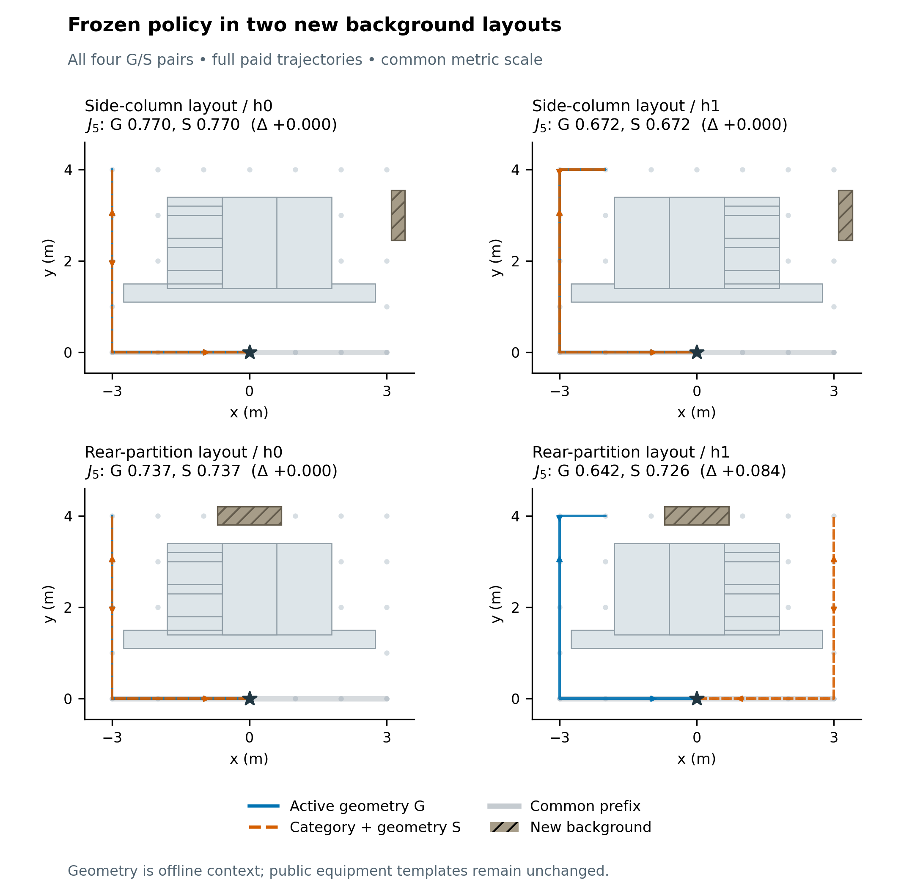
图23 全部四组G/S实际路径，采用共同米制尺度。灰色为共同付费前缀，阴影为新增背景，箭头为保存朝向，星形为起终点。三组路径完全重合，后隔台h1在第19动作分歧。背景真值只用于离线图示。PDF。
侧柱布局的持平并非右边不能去：第18步左右候选均满足返航约束。类别先验改变了候选评分，却未改变共同选左的排序；h0和h1后续分别有24次和16次同输入规划评分改变，实际动作始终相同。后隔台h1中，G的左右评分在冻结的数值容差内相同，按既定顺序选左；S的左右评分约为0.612602和0.642068，转而选右。此时两者非语义观测前缀完全相同、几何对数优势均为0，构型权重分别为G的0.5/0.5和S的0.1/0.9。第19个真实动作因此发生分歧，终点在相同覆盖下提高表面召回和F1。归因对象是整条类别条件路线，不能据此为其中某一帧单独分配端点收益。
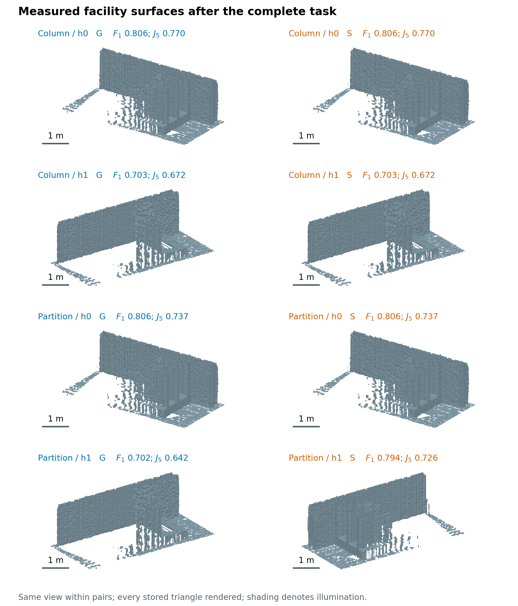
图24 全部八次新增任务的实际TSDF设施网格。各配对共用相机、尺度和光照，所有保存三角面参与绘制，无平滑、补洞或模板补全。原设施评价裁剪保持不变，新增背景在该域之外；明暗不表示误差。PDF。
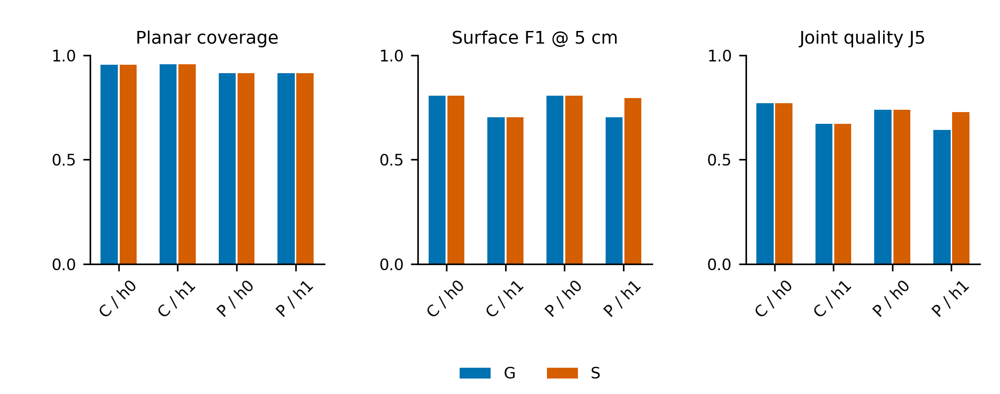
图25 四个配对条件的覆盖、表面F1及联合指标。C/P分别表示侧柱和后隔台布局。全部持平与正差均保留，纵轴统一为0—1；不附加跨独立布局的显著性结论。PDF。
G/S平均平移距离27.0/26.5 m，转向15.0/15.5次。Intel Xeon（Sapphire Rapids）四逻辑CPU主机上，单线程规划累计壁钟均值约0.0474/0.0484 s，包含传感、融合及评价的完整单任务耗时约5.0—5.8 s。时间只描述当前CPU环境，不作为跨硬件速度排名。独立审阅核对全部344帧、实际深度及扫描残差、先验与后验、选择的动作、返航、源代码摘要与评分算术。八次执行均成功，未使用额外八次预留；至此停止新增科研任务。
本章完成了CPU虚拟传感、四接口决策、实际地图融合和独立终点评价的闭环验证。最后冻结策略在两个新背景布局中取得一胜三平、2.9818%的平均联合收益。原完整配对确认支持类别输入带来6.1638%的平均联合收益，开发对照支持整体纠错政策带来2.6241%的平均收益。40个旧轨迹检查点进一步表明，在相同覆盖下，差异主要经由表面召回与F1形成，且短时负差和两个持平构型均保留。新增128项固定矩阵复现42步下6.2505%的类别收益，并在两个同族结构变体上取得4.2289%；同时明确30步的当前规划可行性边界与54步的收益反转。行动、信念和网格使这些结果具有过程解释，可支撑预算受限设施建档方案的受控可行性，真实小车实验可在此基础上作为补充应用展示。独立场景级扩展进一步完成三个开发布局的12条任务，其中原流程11条合格、1条评价失败；共同数值补测得到全部质量记录，但S/B仍在三个布局持平。固定路径分析定位了关联与信息到达问题；进一步12条共同前端闭环消融在环路提高质量、在另两类场景下降，且三组S/B仍持平。保存候选的可达可靠性分析说明，共享强度与观察代理也可能限制作用。最后12条曝光消融进一步改善巷道和工位的部分路线，但保留环路中的类别负例；三个版本九组S/B均无执行差异。主比较的机制前提未满足，因此本轮36次尝试结束后不再扩大在线矩阵。局部类别作用、场景级共同工程改进和新增共享贡献分别陈述，主矩阵不能以这些开发记录代替。
本文已实现未知区域覆盖与已测表面观察的在线联合探索，并分别记录原版、部署变体和实车运行。两次不同执行配置的实车轮次各完成40动作返航，历史初始化续行在7动作后停止、未返航。最新轮次面积代理增长而固定旧表面质量代理下降，12个规划状态S/G同分（仅前2次有多个候选）。这些相关案例支持受限集成闭环可行性，不能证明效率、语义收益或重建精度。Q0中的frontier与联合策略在早期覆盖和长预算覆盖阈值上各有较快条件，表面观察结果亦不同；共同guard下的返航契约差异限制归因，不能推出普遍效率排名。
本文以工业生产中的布局调整和设施建档需求为背景，研究运动预算有限时区域覆盖与设施表面观测之间的协调问题。机器人完成通道覆盖后，设备背面或凹入结构仍可能缺失；类别与结构的关联能够在几何尚有歧义时提供观察方向线索，但错误关联也可能造成预算浪费。为此，本文将类别先验、实测几何反馈和预算规划组织为可执行闭环，在静态配置内检验语义信息对实际建档结果的作用。
系统通过OV-SDF、STGHP、RPN-UQ、IGCR四个接口，分别承担状态登记、观察选择、执行约束和实测纠错职责。局部CPU实现根据公开双模板及深度、扫描残差选择下一原子动作；独立多实例实现维护四构型信念，选择付费观察宏动作并逐步检查执行与返航。两条实现均以有限诊断前瞻组织观察，实际三维表面仅融合取得的深度，模板曝光只参与规划预测。
围绕该方法，本文完成虚拟传感、动作执行、三维融合、日志保存和独立评价的连接。评价同时报告二维覆盖率、设施表面F1及二者乘积，并将任务资格与质量分开判断。轨迹、信念和网格的对应记录，使终点差异能够联系到具体观察决策，而非仅以规划评分或模块调用说明有效。
局部确认实验在两个已见父布局的四个构型条件上比较类别方法S与共同主动几何方法G。两者共享规划器、模板、诊断能力及重建后端，差别是是否使用类别先验。全部任务在预算内完成，零碰撞并返回起始姿态；四组配对为两胜两平，平均联合指标提高6.1638%。平均覆盖率相同，表面F1由约0.737提高至0.783，说明收益来自更有效的表面观测，而不是定位精度或覆盖率同步提高。
最后冻结策略的补证在两种未参与调参的背景布局上完成八次任务，全部合格。四组配对为一胜三平，平均覆盖相同、联合指标提高2.9818%。侧柱布局中类别改变评分但不改变实际路线，后侧隔离台的h1中类别改变第19个动作并改善表面恢复。该补证不改变设备族或原噪声种子，支持有限背景布局变化下的条件作用。
行动记录显示，在原确认的两个正收益条件中，类别方法在相同非语义经历后提前选择了不同的观察方向；持平条件中，两种方法选择相同路线。这表明语义的作用取决于信息是否改变有用决策，并非观察带有类别的设施就必然获得收益。不同距离阈值的结果进一步支持所观察到的条件增量。
错误类别开发实验中，保留实测纠错及未来纠错预期的整体政策，相对同时关闭二者的策略提高平均联合指标2.62%。信念时间线和同状态干预表明，几何证据能够影响后续动作，但严格阈值仍出现负例。共同CPU机制比较还展示了本方法与SWAP-I、VISTA-I在观察分配及表面质量上的差异；由于适配改变了目标和规划细节，这些结果用于说明机制差别，不代表原作者完整系统的性能排名。
固定控制器的新预算比较进一步明确了条件范围。原两布局42步下，两种新噪声实现得到6.25%的平均类别收益；54步下，覆盖均达100%，类别方法的联合指标相对低0.70%，差别主要伴随精确率下降。30步下当前规划器无法满足既定预测覆盖及返航约束，全部失败予以保留。有限预算内的提前选向与充裕预算下的表面质量优化因此不能视为同一问题，模板曝光代理仍有改进空间。
独立场景级开发在AISLE、CELL、LOOP三个布局上比较G、B、S和NBV，共12次尝试。原流程11项合格、1项因极小三角面的数值检查而评价失败；该失败的运动与返航已完成，共同数值补测另行保留。场景级B已经包含固定类别先验，S额外共享同类模型证据，因此S/B检验的是共享作用。三个布局的S/B动作和终点均持平，局部S/G的正结果不能作为该共享作用的证据。
共同地面关联消融又完成相同三布局与四方法的12次任务，全部无碰撞返航。相对统一评价的原开发组，环路布局的联合指标提高0.109889，通道布局降低0.203925，工作单元布局各方法均降低。两个版本中的三组S/B仍全部持平。由此可见，关联资格更稳定或部分信息更早到达，未必使实际观察分配和重建更好；共同前端修正也不是语义专属增量。结合保存候选的可靠性区间分析，当前局部正证据与场景级未建立共享收益的结果应同时保留。
历史曝光消融再完成12条任务，巷道和工位各方法相对地面版提高，而环路B/S降低0.040235。巷道类别方法B在相同实际输入后于第27步选择不同目标，第32个动作首次分歧，但联合指标低于G 0.048716。工位G的诊断分支改变路径并取得高于NBV的端点质量，但第20步诊断本身未带来新反馈。三个版本的九组S/B均无实际动作差异，预声明的主比较启动条件未满足，故六个保留布局的48条主矩阵未执行。该结论保留局部语义增益，也明确了当前共享机制的边界。
局部正结论建立在公开双模板、安全姿态图、人工类别、准确位姿和共同观测前缀之上，场景范围为两个已见父布局、同族结构变体，以及两个预先冻结的新增背景布局。多实例扩展另采用三个开发布局、公开名义结构族与共同付费初始化，保留安全图、人工标签和准确位姿条件；类别先验是设计权重，并非实测识别准确率。两类实验验证受控设施建档的决策价值与运行条件，尚不能推出自然设备识别能力、未知地图探索优势或未见大场景泛化；另行完成的实车闭环和中止记录仅提供受限部署可行性证据，不构成安全保证。四个接口的逐项独立收益尚未全部验证。布局变化是应用背景，现有结果来自独立静态任务，不包含跨时变化检测、地图融合、SLAM定位精度提升或动态避障实验。
局部评价对设施附近的共同ROI评分，覆盖已知不等于占据分类正确；场景级评价使用完整预测网格、固定可观测参考和全部四设施的F1宏平均，未发现设施不从分母移除。两套覆盖、表面和动作定义不同，不能合并均值。更早的六父共享可靠性分支也保留五平一负及关系失配持平的结果，它与本轮原开发、Ground和Exposure各12次分开报告。现有正结论限于得到支持的局部实现条件，完整共享机制的优势仍未确立。
当前每类设备数量有限，S只在固定类别表与均匀表之间调整权重，不学习新的四构型频率。预设T0/T1改变空间布局，同族类别—构型组合保持一致；即使后续执行，也只检验这一固定组合下的空间外推。信息权重、候选排序、实际行动和实测质量之间的各环节均可能成为瓶颈，不能用任一非零中间量代替闭环收益。
预算扩展与地面消融共同指出了一个具体方向：让候选观察代理更好地反映实测表面精确率与完整度，而不只估计模板曝光面积。名义尺度与真实支持的错位会使同一光心的重复转向仍获得“新增面积”；完整曝光消融已说明，排除重复机会在巷道和工位有效，却可能损害环路中的类别策略。后续应针对缺失深度恢复、重复测量降噪与预测信息校准改进模型；不能将本轮布局条件差异概括为普遍增益，也不以增加相同模型的试跑数量替代理论修正。
观察距离、入射角和重复观测冗余仍可作为统一预测模型的研究因素；SWAP中的表面巡检要求[2]提供了参考。类别关系与诊断通道也需要实测校准。进一步面向工业布局调整时，可将当前主动观测策略接入旧地图管理、变化检测与更新后的几何验证流程，分别检查再次采集成本与地图更新质量。
未知探索后续应在相同初始信息、预算和返航契约下进行独立场景重复及匹配的实车覆盖基线比较，分别报告时间、路程、覆盖增量和失败；检验自然语义是否改变实际决策，并用独立参考评价重建精度。当前实车部署已连接自然语义及定位建图，但这些接口和单次运动完成并不证明其性能收益。
未知探索材料：原版代码 ../../../nso/cpu_four_modules_v10.py；部署策略 /home/ouc/nso_robot/workspaces/nso_hybrid_20261029/nso_bridge/nso_bridge/exploration_joint_policy.py；原版、部署策略及覆盖消融矩阵分别位于 /home/ouc/nso_robot/analyses/reproduction_20261104/fresh_matrix/、deployed_policy_matrix/、coverage_ablation_matrix/；实车完整轮次审计 /home/ouc/nso_robot/analyses/resume_20261104/episode_audit.json，续行与轮廓审计位于 /home/ouc/nso_robot/analyses/continuation_20261104/。frontier协议、四条结果及覆盖进程见 /home/ouc/nso_robot/analyses/frontier_baseline_20261104/matrix/{protocol.json,comparison.md,progress_metrics.csv,semantic_timing.json}。双房间两条轨迹及预检与机制审计独立保存在 /home/ouc/nso_robot/analyses/frontier_semantic_publication_stage/experiments/unknown_exploration_20261104/two_room_diagnostic/；事后G×2控制见 /home/ouc/nso_robot/analyses/geometric_weight_control_20261104/comparison.json；frontier公平性回放见 /home/ouc/nso_robot/analyses/frontier_fairness_20261104/audit.json，均不增加24条矩阵样本。168状态标量审计见 /home/ouc/nso_robot/analyses/scalar_equivalence_20261104/audit.json；paid-41三条件干预的冻结协议、资产审计及轨迹见 /home/ouc/nso_robot/analyses/semantic_state_intervention_20261104/，仓库相对位置为 experiments/unknown_exploration_20261104/scalar_equivalence/ 与 experiments/unknown_exploration_20261104/semantic_state_intervention/；约束区间详见本文稿包目录的 paid41_reproduction.md。详细证据对应见同目录 integration_and_evidence.md。这些路径为本机索引，迁移时需随数据调整。
项目将实验运行与文稿构建分开保存。主确认、错误类别和外部机制批次分别位于audit_results/v36_online_confirmation_20260918/、v35_online_development_20260918/和v39_external_cpu_20260920/。每个批次保存配置、执行源码摘要、实际传感包、动作与信念记录、重建网格及评价结果。原开发与确认种子分别为1901和350918。完整科学依赖见仓库根目录requirements-3d.lock.txt；Python及关键科学库版本见第5章平台说明。
新增预算与几何扰动实验保存在audit_results/thesis_expansion_20260928/。其配置configs/virtual3d/thesis_expansion_20260928.json预先列出128项任务、两种子2026092801和2026092802、四策略及几何变体；source_freeze.json绑定实际执行源码和输入。原始任务输出与批后审阅汇总分别保存，失败记录不会由补充分析改写为成功。所有场景内的四策略共享几何与噪声规则，分析按场景、构型、预算和种子配对。
独立多实例研究保存在audit_results/article_stage_20260928/。原开发12条与共同地面关联消融12条已经完成，分别使用configs/virtual3d/article_development_v1_20260928.json和configs/virtual3d/article_ground_ablation_v2_20260928.json。其后同光心曝光去重版本使用article_exposure_ablation_v3_20260928.json，也已完成全部12条。三个版本共36条完整尝试，原流程失败和统一派生质量分别保存，保留布局主矩阵未执行。
| 实现 | 源码归档（相对于多实例研究目录） | 对应原始记录 | 比较含义 |
|---|---|---|---|
| ArticleV1 | execution_sources_v1.zip |
development_v1/ |
G为几何；B为固定类别先验；S另加同类共享；NBV为无诊断前瞻的几何机制 |
| GroundV2 | execution_sources_ground_v2.zip |
ground_ablation_v2/ |
四方法共同改变对象关联中的地面处理，完整深度融合不变 |
| ExposureV3 | execution_sources_exposure_v3.zip |
exposure_ablation_v3/ |
在Ground基础上共同改变同光心名义曝光去重，完整12条已复核 |
各协议的source_sha256、source_archive_sha256和数值环境记录绑定对应实现；当前源码不能追溯替代旧实验的冻结版本。局部实验S/G检验类别可用性，而场景级S/B检验共享；局部ROI下的与全网格、四实例宏平均的分别报告。共同数值面片适配后的CELL/G质量是派生测量，其原评价失败状态不变。
当前NSO仓库已经恢复历史源码、依赖资料及131份原字节源码ZIP；清理后的SGAM独立快照与NSO研究归档用途不同。恢复文件按原对象及SHA核对，但旧神经训练所需的部分LFS本体、子模块和外部场景仍需另行获取，不能据此宣称旧Habitat环境全部可运行。范围与缺件见迁移与恢复说明。复现某一批次时应使用其原协议、源码包与输入清单，不以当前默认依赖替代历史数值环境。
复核可以先从原始动作、评分和配对表开始，无需重新采集。确认批的只读审计入口为scripts/verify_online_confirmation_v36.py，指定原批次作为--batch，并用一个尚不存在的目录作为--output。启动科学Python前将OMP_NUM_THREADS、OPENBLAS_NUM_THREADS、MKL_NUM_THREADS均设为1。审计检查已有文件和指标算术，不增加独立实验样本。
新增批次以analysis_review/complete_endpoint_metrics.csv提供完整任务长表，以同目录的complete_paired_metrics.csv提供条件配对。先检查任务状态、覆盖、碰撞和精确返航，再解释质量值。预算不可行任务的失败时刻部分重建另列为partial_failure_endpoint，不得与合格任务终点混合求均值。噪声重复用于展示同一几何的数值变化，不当作新增独立场景。
原始批次已封存，重采集时应使用独立目录并重新绑定源码、配置和种子，不能覆盖旧数据。局部实验的两类对照也应保持原有解释：S/G改变类别信息；X/Xnf同时改变实测纠错和未来纠错预期，代表整体政策比较。
多实例原开发与Ground完整对照分别见analysis_v1/development12_terminal_20260928/和analysis_v1/ground12_complete/。Exposure完整配对见analysis_v1/exposure12_complete/，三版本36条汇总见analysis_v1/article36_final_summary_v1/。原开发的失败与共同数值补测分开读取；全部四设备保持在宏平均分母。独立审查位于episode_reviews_v1/、episode_reviews_ground_v2/，Exposure使用独立的episode_reviews_exposure_v3/。review通过表示记录符合其审查合同，不把原失败任务改写成原流程成功。
部分已审查任务为节省工作盘空间，将传感数组、压缩step日志及预测数组转为可逐字节恢复的归档，原manifest、ledger、review和压缩操作收据分别保留。合格任务的标准归档位于episode_archives_v1/及episode_archives_ground_v2/，文件名为<run_id>.tar.xz；配套.report.json记录原始和归档SHA、文件数及回读验证。归档内部会将step的gzip内容转换为可共享压缩字典的形式，因此标准tar解包不能代替专用恢复工具。恢复工具重建原gzip字节，并核验每个原始文件及原artifact manifest。
以下命令接口已经通过实际--help和源码核对；从仓库根目录运行。verify只流式检查归档，不写出解压数据，不运行策略、融合或评价。以已保存的原开发AISLE/B为例：
article_stage=audit_results/article_stage_20260928
episode=dev_AISLE_B_b160_n92801
archive_dir="$article_stage/episode_archives_v1"
python3 -B scripts/archive_article_episode_20260928.py \
verify --archive "$archive_dir/$episode.tar.xz"需要读取完整原始文件时，恢复到尚不存在的独立目录；该操作只产生原字节副本，不生成新实验样本：
article_stage=audit_results/article_stage_20260928
episode=dev_AISLE_B_b160_n92801
archive_dir="$article_stage/episode_archives_v1"
python3 -B scripts/archive_article_episode_20260928.py \
restore --archive "$archive_dir/$episode.tar.xz" \
--output "tmp/article_restore_example/$episode"restore仅恢复episode文件，不创建对应阶段ledger。若原始文件已经按已审查压缩计划移出工作目录，而后续只读review需要完整阶段结构，可使用现存计划恢复原episode与其ledger快照：
plan_root=audit_results/article_stage_20260928/compaction_plans_v1
episode=dev_AISLE_B_b160_n92801
python3 -B scripts/compact_article_episode_20260928.py \
materialize \
--plan "$plan_root/development_complete_cohort/$episode" \
--workspace tmp/article_review_workspace_example该命令输出materialization.json及原阶段下的episode，要求workspace全新；原目录和归档均不覆盖。它只用于已存在、哈希匹配的压缩计划。当前报告中的默认review命令针对ArticleV1，Ground/Exposure复核必须选择相应版本reviewer并满足其基线输入要求，不能因为已恢复字节就混用审查器。恢复需保留至少1 GiB自由空间及单集允许量，不必一次展开全部数据。
原失败CELL/G另存为episode_archives_v1/dev_CELL_G_b160_n92801_original_failed.tar.xz，其回执schema为article.failed_episode_original_byte_archive.v1，包含658个文件的字节数与SHA。它是终态失败的原字节取证包，不是上述标准合格episode包，不使用专用archive ... restore冒充完整原manifest恢复；读取副本应按配套回执逐文件核验，保留失败记录及后续数值补测的区别。已有原始文件也不会因补测而被改写。
场景与三维细节图由scripts/plot_thesis_scene_details_20260928.py读取已有路径与网格生成，来源摘要写入图件目录的provenance.json。实物平台图保留原始照片，仅增加矢量标注与接口说明，其文件来源保存在figures/robot_platform_20260928/manifest.json。照片不参与定量评分。
全文的可编辑源是分章Markdown，合并Markdown、LaTeX和PDF由构建脚本生成。在仓库根目录执行以下命令，可重建通用审阅稿及预览：
构建记录绑定源文件与PDF/TeX的SHA256；排版不运行科学实验。当前为通用审阅稿，提交前须适配学校的封面、声明和引用格式。
最终八次任务位于audit_results/final_local_layout_validation_20260929/，包括预登记协议、45文件源码包、准备封存、全部传感包与网格、配对汇总。独立复核位于audit_results/final_delivery_20260929/validation_review.json；原8条任务和结果全部保留，不与既有128项扩展混算。59份旧保护源码的摘要未改变。
代表路线采用预登记列表中的case0，即侧柱h0/G。对43帧已保存数据进行控制器及TSDF重放，动作、状态地图、前缀与终点的原始及评价域网格均精确一致；该过程不创建新世界、不查询新传感，也不重新计算质量指标。核验记录见saved_replay_case0/。交互演示docs/thesis/demos/v40_replay/index.html可离线打开，展示真实保存路径、已观测帧、信念和重建端点；浏览器十项检查均通过。播放与中间视图不能当作新采集或插值得到的三维性能。
最终统一索引docs/research/FINAL_METHOD_REPRODUCTION_INDEX_20260929.md给出公式、代码、数据、主表图及命令对应，包含2—3分钟演示顺序。所有重绘和文稿构建均不新增科研样本。学校、学位与专业资料按用户要求留空，当前通用封面预留替换位置，学校专属格式仍由实际模板确定。